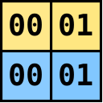

Andrei Gudkov <gudokk@gmail.com>
Introduction
Classical CPU architecture is a poor choice for performing matrix-oriented computations. Developers have to spend much effort to create efficient algorithms even for the problems appearing trivial on the surface. Matrix transpose is probably the most striking representative of such problems. It exposes numerous performance-related issues, such as high memory latency, shortcomings of cache organization, and failure of the compiler to automatically vectorize the code. Performance of more mathematically complex matrix operations is usually bounded by slow math instructions (such as div or sqrt), which mask the majority of other issues. Matrix transpose, on the other hand, being stripped of any slow instructions, is open to all kinds of inefficiencies. In this article we are going to gradually build a sequence of progressively more efficient implementations of matrix transpose, with the most sophisticated implementation being up to x25 times faster than the naive one. During each step we will locate the bottleneck, figure out what has caused it, and think of a solution to overcome it. This article is intended to serve as an introduction to optimizing matrix algorithms for x86_64, presented from the perspective of a real-world problem.
Setting
We will work with the following formal problem statement: given NxN src matrix consisting of 1-byte elements,
and dst matrix of the same shape (non-overlapping with src), copy each src[r,c] element into dst[c,r].
Below is the straightforward C++ prototype:
1
2
3
4
5
6
7
8
9
10
11
12
13
14
15
16
17
18
19
20
class Mat {
public:
int64_t n() const { return _n; }
const uint8_t* data() const { return _data; }
uint8_t* data() { return _data; }
uint8_t at(int64_t row, int64_t col) const { return _data[row * _n + col]; }
uint8_t& at(int64_t row, int64_t col) { return _data[row * _n + col]; }
/* ... */
private:
int64_t _n; // matrix size
uint8_t* _data; // array of size n*n
};
void transpose(const Mat& src, Mat* dst) {
// copy each src[row,col] to dst[col,row]
}
Here you can see that I imposed some restrictions:
matrices are of square shape, they are filled with one-byte elements,
and transpose happens out-of-place.
The most important restriction is that element size is one byte long.
The reason behind it is that it will make things more challenging than with larger element sizes.
Increasing element size to, let’s say, int64_t will create more pressure on memory throughput,
making it primary bottleneck and therefore hiding other issues.
In general, all imposed restrictions can be lifted without loss in performance.
However, to create a truly "universal" transposer would require too much
boilerplate code not fitted for the purpose of this article.
Numbers in square brackets after section names will indicate performance of the corresponding algorithm, expressed as average number of CPU cycles per single matrix element. They were measured for a matrix of size 2112x2112, selected to represent medium size. For larger matrices the difference in algorithm performance will be even more prominent. The hardware used for testing is Skylake 7700HQ CPU with Turbo Boost off.
Naive implementation [3.90]
Naive implementation is trivial and can be coded in less than a minute.
Just scan src row by row, column by column, and write elements to the corresponding location in dst matrix.
1
2
3
4
5
6
7
8
void transpose_Naive(const Mat& src, Mat* dst) {
const int64_t n = src.n();
for (int64_t r = 0; r < n; r++) {
for (int64_t c = 0; c < n; c++) {
dst->data()[n * c + r] = src.data()[n * r + c];
}
}
}
Below animation demonstrates the progress of the above algorithm being applied to a small 22x22 matrix. Color denotes status of the element: already processed (green), current (blue), or not yet processed (red). Fading effect encodes which elements are currently in cache and their age since they were last accessed. In this toy simulation cache size was set to 10 entries with last-recently-used (LRU) eviction policy, where each cache line is 8 bytes long. Real x86_64 systems have caches of thousands of 64-byte long cache lines.
The implementation we currently have is the simplest possible and, as it usually happens, also the slowest one.
We will use it as a baseline to compare more advanced implementations against it.
But before moving forward, we would like to figure out the source of its inefficiency.
To do it, let’s trace mentally the function step by step and look at what happens at hardware level.
We are primarily interested in the memory subsystem.
Since there are two logical streams of data — read from src and write to dst — we will analyze them separately.
Read stream
There are NxN reads in total.
On a hardware level, each such read is handled by MOV *addr → reg instruction.
Unlike arithmetic instructions, which have somewhat fixed latencies, latency of a standalone MOV instruction
varies widely in the range approximately between 4 and 300 cycles depending on where requested data is located.
If we are lucky and data is found in L1d cache, then MOV is nearly instant (4-5 cycles).
Cache hits to deeper levels are progressively slower: 12-15 cycles for L2, and 40-45 cycles for L3.
Cache miss to L3 causes MOV to experience the latency of RAM access, which costs up to 300 cycles.
The exact cost of accessing RAM is also not fixed but depends on a variety of factors including RAM clock frequency, RAM timings,
location of the requested data within complicated RAM geometry, current RAM state, and contention caused
by other CPU cores.
The following drawing roughly approximates the cost of accessing different layers of memory subsystem versus their sizes.
In short, the variation in MOV latency is huge.
Fortunately for us, our read pattern is so simple, that we can easily guess where data comes from at every iteration.
Since our matrix organization is row-major and we also scan it row-major,
the loop simply walks linearly along addresses from src.data()+0 to src.data()+n*n.
When the very first element of the very first row of the src matrix is accessed, it surely causes full memory access
because this element is not cached anywhere yet.
In terms of latency this access is extremely expensive: let’s assume 300 cycles.
However, to load one byte means actually to load 64 consecutive bytes at once because unit of cache operation
is 64B-long 64B-aligned cache line.
We humans think of a memory as an array of one-byte elements, but memory subsystem treats it as an array of 64B-long cache lines.
For example, when a MOV instruction is issued to read byte at address 361110, then actually the whole sequence of bytes in range
358410 .. 364710 is read and brought into cache simultaneously.
To simplify explanations and without loss of generality, we can assume that beginning of src is aligned by 64.
In this case access to the (r=0,c=0) element causes the entire sequence of (r=0,c=0)..(r=0,c=63) elements to be brought into L1d at once.
This makes next 63 iterations as cheap as they could possibly be because they are served directly from L1d (just couple of cycles)
without being blocked by accesses to slower memory subsystem layers.
Furthermore, iterations of the loop do not have any dependencies between them. This allows CPU to effectively engage out of order execution, meaning that multiple instructions can be executed in parallel and in order different from program flow. Out of order execution is possible thanks to the presence of multiple pipelined execution units inside CPU and a CPU frontend which decodes instructions and feeds them to execution units faster than they execute the instructions. This has net effect that once cache line is loaded into L1d, further iterations of the loop can be processed in parallel. In total the latency of reading first 64 elements can be roughly estimated as 300c+(63x5c)/4, where 300c is the latency of loading cache line from memory, 5c — latency of accessing L1d, and 4 is the speedup due to out of order execution. The cost of initial memory read dominates the overall latency.
Next iteration accesses adjacent cache line (r=0,c=64)..(r=0,c=127), which is already… in cache. Three important optimizations make it possible to load data ahead of time: prefetching, in-memory buffering, and high memory parallelism.
-
The goal of the first optimization — prefetching — is to predict which cache lines will be accessed in the long run and to load them into cache in advance. Sophistication of prefetchers — what and when they preload — differs between CPUs, however preloading next cache line(s) in the course of linear scan is universally implemented in all CPUs due to ubiquity and simplicity of this access pattern. After just a few iterations prefetcher will sense that addresses are accessed sequentially one by one and initiate aggressive preloading of successive cache lines, much earlier that they would be accessed in the course of the program.
-
DRAM organization also plays crucial role. It favors requests to the data located close together in address space. Prefetching alone can’t help much by itself — it would only partially mask long latency of memory read. Execution would still stall every 64’th iteration to wait for load to complete, albeit for a shorter time period than otherwise would be without a prefetcher. This problem is alleviated by buffered nature of DRAM design ("buffered" here is used as a general term and has nothing to do with buffered/registered DRAM). Similar to cache, which works in units of 64B, RAM also has its own unit of operation — 8KiB row. When data at some address is accessed, DRAM loads the whole 8KiB row of adjacent data from slow capacitor-based storage into much faster transistor-based buffer. Successive requests to nearby addresses will be served directly from this buffer, an operation that is several times faster than initial access. In our case let’s assume that initial load takes 300c and further loads to nearby addresses cost only 100c.
-
Final major optimization relates to memory parallelism. Internally memory is organized into hierarchy of banks, ranks and channels. Lowest units of this hierarchy — banks — can work independently. Memory controller makes use of this feature by interleaving address space across the banks. It maps first cache line into the first bank, second cache line — to the second bank, and so on. This doesn’t reduce the latency, but it allows to (pre)load multiple cache lines in parallel if they are located in different banks, which is exactly what is happening during sequentially accessed address space. Typical parallelism is ~16 on a typical desktop and many times larger on server-grade CPUs with a lot of memory modules installed.
When all three optimizations are combined, data is preloaded into L1d significantly earlier than it is accessed by the program, and long latency of RAM stops to be a bottleneck. For all iterations except the very first one performance is limited not by the latency of RAM, but by the latency of L1d and execution units, which are already perfectly small and cannot be optimized any further. This leads us to a final estimation that no matter how large the matrix is, read stream is capable of processing the whole matrix in approximately (NxN)x(5/4) cycles, or 1.25c per element on average. Timeline below roughly approximates sequence of events during sequential read. Eventually the system will stabilize in a state when cache is entirely full: there will be a number of preloaded yet not accessed cache lines, while all other cache lines will have already been processed by the program. During each group of 64 iterations one more cache line will be preloaded, one cache line will be accessed by the program, and one old cache line will be evicted from the cache due to limited L1d size.
Note that all described features are important for achieving good sequential read performance:
-
L1d serves read requests two orders of magnitude faster than RAM does, provided that data was previously cached
-
out of order execution has an effect of automatic parallelization of linear program flow inside small code window
-
in-memory buffer provides lower latency for closely located addresses compared to random addresses
-
prefetcher predicts which data will be needed in the future and preloads it into cache ahead of time
-
multi-bank memory geometry makes it possible to handle multiple prefetcher requests simultaneously
Below table lists performance estimations as we "enable" features one by one. Numbers are based on already given values: 5c for accessing L1d, 300c — for initial RAM load (which we can decompose into 295c it takes to load cache line from RAM into L1d plus 5c for accessing L1d), 100c (=95c+5c) — for the following RAM loads to nearby addresses, x16 is the memory parallelism, and x4 is the speedup due to out-of-order execution.
| Cycles per element | = | Features enabled |
|---|---|---|
295+5 |
300.0 |
none |
(295+5*64)/64 |
9.6 |
+caching |
(295+5*64/4)/64 |
5.9 |
+out-of-order execution |
(95+5*64/4)/64 |
2.7 |
+in-memory buffering |
max(95/64, 5/4) |
1.5 |
+prefetching |
max(95/64/16, 5/4) |
1.3 |
+multibank geometry |
Summarizing long explanation, sequential read is the best possible way to work with memory.
It is ubiquitous in practice, easily recognized by prefetchers, and there are many ways in hardware to optimize it for.
Once you have paid for initiating sequential read (which is high), data flows out of RAM at the speed that
is limited only by how fast you are able to process it.
In case of naive matrix transpose algorithm we can be absolutely sure that reading src matrix is not the bottleneck.
Write stream
Write stream is different in two aspects: 1) addresses are not accessed in sequential manner anymore; 2) the performed operation is write, not read. Both aspects make negative impact on performance.
It is common misconception to think of writing as of symmetric operation to reading. While logically it may look so, the underlying mechanics is quite different, giving both positive and negative traits to both types of operations. Big downside of writing compared to reading is that to complete write operation memory must be accessed twice. Recall that unit of memory operation is 64B-long cache line. Most of the time programs want to modify only couple of bytes. In order to fully complete a write, CPU has to perform three steps: load entire cache line first, then apply the modification, then write entire cache line back to memory. Such complex procedure increases overall cost of writing up to two times higher than it is for reading. However, the good thing about writing is that often there is no need to wait for all of this. Unlike reading, which requires that data is delivered to execution unit before continuing execution of the program (surely, you cannot compute x+y until both of the arguments are loaded), there is no need to complete write request here and now. Instead of this, CPU memorizes write request and immediately continues execution of the program. Write requests are stored in a special buffer — store buffer, which is 50-100 entries long. Every entry in store buffer consists of an address of the target cache line, new data, and the mask signifying which bytes must be modified. CPU commits memorized write requests into cache and/or memory independently of program execution, and even does so with multiple requests in parallel to leverage memory parallelism. Net effect is that when number of unique affected cache lines per unit of time is small, store buffer entirely masks long latency of memory subsystem, i.e. all write instructions appear to happen instantaneously fast. Yes, somewhere in the background there is the process of loading cache lines, applying modifications and writing cache lines back, but the program execution is too slow to notice all of this. However, if write requests are appended to store buffer faster than they can be committed, then store buffer becomes full and the execution is blocked. If such thing happens, store buffer stops to be of any use and we are again exposed to memory subsystem latency, additionally multiplied by a factor of up to 2.0 because each commit requires one read and one write.
Drawing below demonstrates the described worst-case scenario. After short warm-up phase store buffer and all caches become full and the system transitions into stable state. Any attempt of store buffer to place modified cache line into L1d causes eviction of some older cache line from L1d to L2, which causes eviction of some cache line from L2 to L3, which in turn results in eviction of some cache line from L3 to DRAM itself. Using previously used numbers, we can roughly estimate average processing time per element as (300c+100c)/16=25c.
Another big difference of the write stream in our program is that matrix elements are accessed in column major order:
src, src+N, src+2*N,…
This is called strided access pattern, which in general form is base±stride*i, where i=0,1,2,…,
and stride is a constant value.
All previously described optimizations are in place, but now they are much less efficient.
The primary show-stopper comes from significantly reduced usefulness of caching.
Look at the animation in the beginning.
Due to strided access, first N elements are mapped to different cache lines and therefore
must be loaded directly from RAM.
Loading each of these cache lines is expensive, and even prefetcher with high memory parallelism can’t entirely
resolve this problem: they will deliver each next cache line 300c/16 on average.
But that is not all.
When the algorithm moves on to the next column, it will access elements mostly in the same cache lines.
We, of course, hope that they are already in L1d and thereby working with them will be fast.
But are they?
Not always.
It all depends on value of N versus cache sizes.
For small N ≤ size(L1d)/64 ≃ 512 our reasoning is valid, and the next column and actually
many more columns will be processed fast, since their elements are served from L1d.
But larger N will cause eviction of cache lines to L2, even larger N — to L3, and even more larger — to RAM.
This means that each time an element is accessed, its cache line has long been evicted from L1d
to a deeper-level cache and must be served from there.
The worst case happens when N is so big that single Nx64 block doesn’t fit even into L3.
In this case all accesses will be to RAM, and caching stops to be of any use.
For a system where entire 6 MiB L3 cache is available exclusively to transposer program,
this will happen with N at least (6*1024*1024)/64=98304.
It is hard to imagine a practical application which operates on a dense, 9GiB-sized matrices.
However, the insufficiency of L1d and L2 sizes is quite common.
For example, one color plane of Full HD frame is 1080 in height, and therefore
all cache lines backing single 1080x64 column would fit only in L2.
| Cache | Cycles | Size | Cache lines (max N) |
|---|---|---|---|
L1d, private |
4-5 |
32 KiB |
512 |
L2, private |
12-15 |
256 KiB |
4096 |
L3, shared between 4 cores |
40-45 |
6 MiB |
98304 |
The conclusion is that performance of strided access pattern depends on N. We can roughly estimate that it can range between 5c/4 and 300c/16 per element, with more realistic figure of 40c/4 (L2 latency divided by out-of-order speedup). This last value is order of magnitude larger than 1.3c we estimated for read stream and indicates that write stream is a severe bottleneck in naive transpose algorithm.
Combining read and write streams together
In the two previous sections we were analyzing read and write streams independently, like if there was only one stream at a time. As you probably see, even with such decomposition, theoretical explanation was quite long due to complexity of CPU architecture. When both streams are fused together into single algorithm, things become even more complicated since both streams compete for the same resources. This is further aggravated by the fact that we ignored many non-essential details, such as virtual to physical address space translation, contention for cache resources from different cores, prefetcher limits, etc. Nevertheless, the key predictions for our algorithm holds true: performance degrades as N grows, and the write stream is the bottleneck.
Testing was performed by transposing matrices of different sizes filled with random values. To avoid issues associated with microbenchmarking, each test processed at least 8GiB of data, i.e. for N=1397, a group of K=4401 source/destination pairs of matrices were prepared and transposed in a burst; the overall time was measured and divided by K. Time was measured with rdtscp instruction, which (at least on this particular CPU) is a counter that increases by one each 1/max_non_turbo_frequency_hz. Dividing per-matrix running time further by N^2 provides us with an average number of cycles it takes to transpose one element. Blue plot shows how this value depends on N.
Except occasional spikes, which will be the topic of the next section, our prediction holds true. We can clearly identify four performance regions: up to approximately N=487, up to N=3388, up to N=58838, and everything larger than that. Up to N=487 the performance is around 2.5c per element. This corresponds to a single Nx64 block fitting entirely into L1d cache. Other regions are progressively slower: L2, L3 or RAM respectively are required to fit such a big block.
In addition to cycle measurements, I also included two counters related to L2 cache: l2_rqsts.rfo_hit and l2_rqsts.rfo_miss.
They come from performance monitoring unit (PMU) and can be measured with perf command line tool.
These counters measure number of L2 cache hit and miss events with respect to writes.
More specifically, RFO relates to multicore systems.
It is the message that CPU core sends in order to load cache line with intention to modify it.
RFO hit means that target cache line was found in cache
and in a state that allows its modification.
RFO miss means that cache line is either not found in cache or this core is not the exclusive owner of it.
Since our program is single threaded, we can assume that, with rare exceptions, all miss events were triggered by the former,
i.e. that cache line was not found in L2 and must be loaded from L3 or RAM.
Again, counter values agree perfectly with our expectations. Up to N=487 there were neither hit nor miss L2 write events because Nx64 block fits into L1d cache and therefore no RFOs were propagated to L2 at all. Up to N=3388 hit rate is always 100%, confirming that data fits into L2. With even larger N values hit rate slowly falls up to approximately N=5712, when all accesses result in misses.
Dealing with cache aliasing
While our expectations in general work good, for some N we can observe high spikes in running time. They occur usually around some "good" numbers, such as powers of two: 256, 2048, 4096. By looking into PMU counters we can detect that these spikes coincide with suspiciously bad cache behaviour — something we didn’t anticipate. What exactly could the be the cause?
The issue stems from cache organization. Usually we model cache as a black box, which is able to store K cache lines with last recently used eviction policy. In another words, if we access K different cache lines, then they all will happily settle down in cache, and only after accessing K+1’th distinct cache line some older cache line will have to be evicted. Such behaviour requires the cache to be fully associative, i.e. every slot in the cache must be able to store any cache line. In reality fully associative caches are rarely used because of performance issues — imagine, to search for a cache line, hardware would have to compare target address with all K (tens or even hundreds of thousands) cache slots simultaneously. Instead, archetypical cache is organized as a collection of multi-way sets. Logically, each set acts as a small, independent, fully-associative cache with capacity equal to number of ways (typically 4-16). Given index of the cache line, it can be stored only inside single set, which is computed using modulo operator. Example below shows the computations that are performed when you dereference a pointer with value 5769010. First, cache line index is computed by dividing address by cache line size: ⌊5769010/64⌋=901. And next, taking the remainder of dividing index by number of sets gives the set index: 901 % 64 = 5. Set number 5 is the only set where cache line backing address 5769010 can be cached. Note that all other cache lines sharing the same remainder have to compete for the same set number 5. Such organization is very efficient. Since cache line size and number of sets in practice are both powers of two, the result of division and modulo operators is just subsequence of bits inside binary representation of the address, so in fact nothing needs to be "computed". And once the set index is known, only 8 ways must be checked simultaneously to find whether cache line at given address is cached or not.
For the majority of programs multi-set design is no different from fully-associative cache since sequence of accessed addresses in a random program is irregular. For a typical program, the majority of memory accesses are caused by walking through complex hierarchies of objects by dereferencing pointers into the heap. Hence all the cache sets are loaded approximately evenly. However, algorithms operating on multi-dimensional data are a notable exception from this rule. Majority of such algorithms walk along columns or planes of the data, thus inducing strided access pattern. Naive transposer is exactly the algorithm of this kind. Its inner loop fills in single column, thus accessing elements standing apart by N: ColumnBegin+i*N, i=0,1,2,… Strided access pattern is notorious for its interference with multi-set cache organization. Suppose that ColumnBegin=1234567810, N=256, and number of sets is 64. The elements of this column are mapped to the following sequence of set indices:
You can see that the pattern repeats and that only 16 sets are involved instead of all 64. The remaining 48 sets have zero load. This effectively reduces cache size from 512 entries down to just 128. Since the latter is smaller than N=256, data overflows into L2, ruining performance for this specific N. For each level of cache there exist some values of N, for which one column of data should fit into cache but it doesn’t because of multi-set design. These bad N values may differ from one level of cache to another one because caches have different number of sets and ways.
Now it becomes clear that it is not enough to compare N with number of cache entries to predict performance. To ensure perfect caching we need to compute load of each of the sets by simulating first N iterations. If load for all sets is less or equal to number of ways, then Nx64 block will fit into the desired cache. If load exceeds number of ways for at least one set, then there will be overflow, leading to suboptimal performance. Of course, simulation is too cumbersome to do in practice. Fortunately, it is possible to avoid cache aliasing (how this issue is called) without knowing the exact geometry of caches. Let us state sufficient condition on N that ensures perfect caching: N must equal to cache line size multiplied by some odd number. All of N=64, N=192, N=6464, N=6592 will guarantee perfect caching for all cache levels. To prove the stated condition it is enough to show that for every two iterations i1, i2, such that 0 < |i1 - i2| < 64, accessed addresses are mapped to different cache sets.
The last transition follows from the fact that since NumSets is always power of two, then NumSets and OddNumber are co-prime. This is where we depend on the oddity. Final statement is true since 0 < |i1 - i2| < NumSets = 64. Net result is that if N equals to some odd number times cache line size, then any N consecutive iterations will access cache lines mapped to different sets.
How can the knowledge of which sizes are good and which are bad be of any help to us? We cannot require user to work only with matrices of good sizes — we have to support arbitrary-sized matrices. But what we can do is to require user to pad matrix up to an odd number of cache lines during memory allocation. If user wants matrix of, let’s say, logical size 4000x4000, then they should allocate matrix of physical size 4032x4032 instead. Top left block of size 4000x4000 would carry the actual data, while the remaining fringe is just a placeholder to ensure that the stride value is proportional to an odd number of cache lines. In terms of memory overhead requirement for padding is costly only for small matrices. With N growing to infinity, the overhead fades to zero very soon. For N=4000 it is less than 2%.
In addition to padding, we will also require that the beginning of matrices is aligned by cache line size (64). Together with requirement for padding this means that each row will be covered by integer number of cache lines. The regularity of such layout grants us a number of benefits: it is much easier to analyze; cache lines backing matrices become "matrix-private" in the sense that they carry only the data of the matrix and never the data outside of it; finally, but of no least importance, is that such layout is aesthetically pleasing.

After imposing new requirements and rerunning our previous examples, all timings become as expected. There are no more unpleasant spikes. For the sake of brevity, from now on, we will assume that matrix size N itself is proportional to an odd number of cache lines and that its beginning is aligned with the beginning of cache line.
| Original size | Padded size | CPE improvement | Memory overhead |
|---|---|---|---|
256 |
320 |
6.1 → 2.3 |
56% |
1024 |
1088 |
13.3 → 4.0 |
13% |
2048 |
2112 |
14.0 → 3.9 |
6% |
4096 |
4160 |
23.4 → 5.6 |
3% |
30720 |
30784 |
24.3 → 6.7 |
<1% |
77824 |
77888 |
26.9 → 9.2 |
<1% |
111744 |
111808 |
21.8 → 12.4 |
<1% |
Reversing the order [2.61]
In the naive algorithm, we have perfectly good read performance but very poor write performance.
The latter is caused primarily by the fact that single Nx64 rectangle of dst is not able to fit into small L1d cache
and eventually has to settle down in caches of deeper levels or RAM, from where it has to be reloaded 64 times.
But also poor performance to a lesser extent is the result of the mechanics of write operation.
Unlike read operations, which can discard cache line after the load is complete, write operations
have to load cache line, modify it, and store it back into cache.
They cannot throw it away.
In this sense, writes are more expensive that reads in our algorithm.
This leads us to a straightforward idea of reversing the order of scans.
Let’s scan destination matrix in row-major order, while source matrix in column-major order.
We will call new algorithm the "reverse" one.
Its code is exactly the same as for "naive" algorithm except that src and dst are swapped.
Note that now it is dst matrix that is processed in a natural way: row by row, column by column.
1
2
3
4
5
6
7
8
void transpose_Reverse(const Mat& src, Mat* dst) {
const int64_t n = src.n();
for (int64_t r = 0; r < n; r++) {
for (int64_t c = 0; c < n; c++) {
dst->data()[n * r + c] = src.data()[n * c + r];
}
}
}
By changing the order of scans we optimize for writes while sacrifiying reads.
Now writes are perfect instead of reads.
Since destination matrix is scanned in row-major order, a group of 64 consecutive dst elements is mapped to a single cache line.
This allows for the cache line to be fully assembled from scratch in a store buffer and then flushed into cache,
all of this without waiting for the load of the cache line to complete.
Reads become bad, of course, for the same reasons as previously writes were.
They are served from the fastest cache where Nx64 rectangle fits.
To see the difference between naive and reverse algorithms, let’s apply them to a matrix of size N=2112 and look at PMU counters related to caching. Table below lists such counters for transposing 1925 different N=2112 matrices, covering in total 8GiB memory region. Two right columns contain counter values normalized by total number of elements (2112x2112x1925). Normalized values close to integers are of primary interest to us.
| [unit] | Naive | Reverse | Naive (per element) | Reverse (per element) | |
|---|---|---|---|---|---|
cycles |
cycles |
32,871,245,961 |
23,190,957,114 |
3.83 |
2.70 |
resource_stalls.sb |
cycles |
13,003,900,440 |
6,354,997 |
1.51 |
0.00 |
l2_rqsts.rfo_miss |
events |
168,060,516 |
10,456,844 |
0.02 |
0.00 |
l2_rqsts.rfo_hit |
events |
8,415,924,030 |
118,731,907 |
0.98 |
0.01 |
mem_load_retired.l1_hit |
events |
25,579,546,018 |
17,215,727,397 |
2.97 |
2.00 |
mem_load_retired.l1_miss |
events |
40,903,824 |
8,566,909,802 |
0.00 |
1.00 |
mem_load_retired.l2_hit |
events |
33,705,885 |
8,329,067,355 |
0.00 |
0.97 |
mem_load_retired.l2_miss |
events |
7,204,398 |
237,847,533 |
0.00 |
0.03 |
First let’s compare writes. As was already mentioned before, l2_rqsts.rfo_{miss|hit} count L2 misses and hits with respect to write operation. Naive algorithm demonstrates one hit per each element and no misses, proving that for each processed element cache line has to be fetched from L2. This is exactly where we expect to find it, since single Nx64 block cannot fit into L1 but fits into L2: 32KiB < 2112x64=132KiB ≤ 256KiB. On the other hand, both counters are zero for the reverse algorithm, indicating that there was no need to search L2 or higher-level caches at all. Another way to see that reverse algorithm significantly improves write performance is resource_stalls.sb counter. Roughly speaking, it measures number of cycles when execution couldn’t advance because store buffer had no free entry. Its value is approximately 40% of all cycles for the naive algorithm, but is nearly zero for the reverse algorithm.
Comparing read performance is slightly more complicated. Presence of three L1 hits per each element and no L2 misses for the naive algorithm proves our reasoning that all data comes from L1. But why three loads and not one as we expected? To answer this question, let’s look at the generated machine code. Below is the inner loop of the naive transpose algorithm generated by GCC-10.
1
2
3
4
5
6
7
8
9
10
11
12
13
14
15
16
;+----------+--------------------------------------------------------+
;| r9/r10 | src/dst |
;| 24 | offset of _data inside Mat class |
;| rax/rdx | offset of the current element from src._data/dst._data |
;| rdi | dst stride |
;+----------+--------------------------------------------------------+
.L7:
movq 24(%r9), %rcx ; load (extra)
movzbl (%rcx,%rax), %esi ; load (data)
movq 24(%r10), %rcx ; load (extra)
incq %rax
movb %sil, (%rcx,%rdx) ; store
addq %rdi, %rdx
cmpq %rax, %r8
jne .L7
It turns out that in lines 9 and 11 there are extra loads.
They reload addresses stored in src._data and dst._data into registers during each iteration
of the algorithm.
Since these values are constant, they obviously are always served from L1 and do not have
any noticeable negative impact on performance.
However, they increase counter values in the same way as truly heavy data loads do.
That’s why we observe two extra loads from L1d per each processed element than we expected.
This happens for both algorithms since generated code is identical with the exception that
references to src and dst are swapped.
Of course, different compilers and even different options of the same compiler may result
in different generated code, with bigger or fewer number of loads per each element.
Now with extra loads demystified, we can clearly see that performance of reads mirrors that of writes. All data loads of the naive algorithm are served from L1 with no accesses to deeper level caches. But for the reverse algorithm data loads are served from L2. The latter can be deduced from l1_miss≈l2_hit≈1.0 and no accesses to L3 (l2_miss≈0.0).
To conclude the analysis, let’s look into the most important metric — number of cycles per element.
Here we can see that reverse algorithm is faster by 1.4 times.
Not bad taking into account that the only thing we had to do is to swap src and dst references.
Although read and write performance in terms of events per element are entirely symmetric for
two algorithms, write "events" turn out to be more expensive.
This explains the superiority of reverse algorithm compared to the naive one.
Exploring block structure [1.46]
Both naive and reverse algorithms are inefficient because the way they access memory causes continual eviction of L1d cache lines into deeper-level caches (or into RAM) and further reload of these cache lines back into L1d. In other words, working set is too huge compared to L1d cache. For both algorithms it equals to 64×N+ε. As soon as N exceeds size(L1d)/64≃512, continual eviction and reload of cache lines takes place. During this time program flow is blocked by large number of cycles during each iteration, leading to poor performance. The larger N, the deeper memory subsystem layers are accessed and the more prominent degradation becomes. If we want to make any progress on optimization, we need to somehow make working set fit into L1d no matter how large N is.
Luckily, the transpose operation preserves 2D data locality.
If a group of elements are located close in source matrix, then they will be close in destination matrix.
They are not scattered all over the dst matrix, but closely reside in a submatrix of the same shape and size.
Not all operations are so good.
For example, when squaring a matrix, each output element depends on one full row and one full column of the input matrix.
In another example — computing partial sums — each output element is the sum of all i⋅j preceding elements.
But the majority of matrix operations preserve 2D data locality,
since matrix as a data structure is designed to represent spatially related data.
Transpose also falls into category of such operations.
Data locality is a very powerful property because it allows to split matrix into arbitrary
non-overlapping blocks and process one block at a time.
The result of a single block transpose will be also a block of the same shape and size,
therefore allowing caching to do its best.
If block size is small enough, then it can be processed entirely within L1d boundaries
without overflowing into deeper-level caches — exactly what we need.
Image below demonstrates how we can split 12x12 matrix into 4x4 blocks.
Note an obvious fact that locations of the blocks themselves are also transposed.
For example, when we are working on top-right AC block, we are transposing its elements and writing them
into bottom-left block of the destination matrix.
More theoretically it can be said that what we are doing is a composition of 1+(12/4)(12/4)=10 transpositions.
One of them is the outer transposition of the 3x3 block matrix itself, where each element is a single 4x4 block.
All other 9 transpositions are byte-wise transpositions of the respective blocks.
We can perform transpositions in any order we like among all 10! variants and will get identical results in the end.
In practice we will process blocks one at a time and write elements to the final positions in dst matrix,
thereby implicitly performing outer transposition.
Guided by the idea, let’s treat matrix as consisting of cache aligned blocks of size 64x64, so that every row of a block maps to exactly one cache line. With such setup, no matter how large original NxN matrix is, the working set of any transposer is bounded from above by 2×64×64+ε = 8KiB+ε < size(L1d). This bound consists of one 64x64 block of the source matrix, one 64x64 block of the destination matrix, and some small, constant-sized volume of memory for the algorithm itself.
Source code for block transpose requires four nested loops. Two outer loops iterate over the blocks, while two inner loops iterate over the elements of a single block. The order of scans (row-major or column-major) is of no particular importance thanks to small working set, with only marginal difference in performance between all four possible options. The piece of code below scans blocks in row-major order, while the elements of a single block in a column-major order, exactly as in the animation.
1
2
3
4
5
6
7
8
9
10
11
12
13
14
15
void transpose_Blocks(const Mat& src, Mat* dst) {
const int64_t n = src.n();
const int64_t bsize = 64;
for (int64_t rb = 0; rb < n/bsize; rb++) {
for (int64_t cb = 0; cb < n/bsize; cb++) {
const uint8_t* src_origin = src.data() + (rb * n + cb) * bsize;
uint8_t* dst_origin = dst->data() + (cb * n + rb) * bsize;
for (int64_t r = 0; r < bsize; r++) {
for (int64_t c = 0; c < bsize; c++) {
dst_origin[r * n + c] = src_origin[c * n + r];
}
}
}
}
}
The efficient usage of cache should be evident from the animation.
Now reading can cause expensive stalls only during the first 64 iterations of transposing each block,
when the block is being loaded into cache, while the data for the remaining 63*64 iterations is cheaply served from L1d.
Situation with writes is similar.
Rows of dst block are fully assembled in store buffer and flushed at some point later
asynchronously to code execution.
As before, per-element PMU counters can be used to confirm our findings. If we apply all three algorithms to a matrix of N=2112, we can observe that block algorithm is the only one not affected by any cache misses. All L2-related counters are zero, meaning that there was no need to send requests to L2 or deeper caches. This is true for both reads (mem_load_retired.l2_{hit,miss}) and writes (l2_rqsts.rfo_{hit,miss}). In this sense block algorithm inherits all the benefits of naive and reverse algorithms without inheriting any of their drawbacks.
| [unit] | Naive | Reverse | Blocks | |
|---|---|---|---|---|
cycles |
cycles |
3.83 |
2.70 |
1.46 |
resource_stalls.sb |
cycles |
1.51 |
0.00 |
0.00 |
l2_rqsts.rfo_miss |
events |
0.02 |
0.00 |
0.02 |
l2_rqsts.rfo_hit |
events |
0.98 |
0.01 |
0.00 |
mem_load_retired.l1_hit |
events |
2.97 |
2.00 |
0.99 |
mem_load_retired.l1_miss |
events |
0.00 |
1.00 |
0.01 |
mem_load_retired.l2_hit |
events |
0.00 |
0.97 |
0.00 |
mem_load_retired.l2_miss |
events |
0.00 |
0.03 |
0.01 |
Now let’s rerun the tests for matrices larger than N=2112. We can now clearly see what makes block algorithm so good. Its performance is constant for both small and big matrices — a property of the algorithms so much welcomed in practice.
It is hard to overestimate the importance of block decomposition for the matrix algorithms. Like all such algorithms, block transposer provides constantly good performance, and the code listing is still fewer than 20 lines of non-architectural code. Block transpose is probably the method of choice for the majority of applications. It is efficient, simple, and doesn’t depend on specifics of particular CPU architecture. Upcoming methods are even faster, but they lack these properties.
Software prefetching [1.35]
In our next improvement towards reducing memory latency we will stop relying on automatic prefetching and replace it with manually issued hints to prefetch data. In optimization parlance the former is usually called "hardware" prefetching to emphasize that prefetch requests are initiated by hardwired algorithms, while the latter is called "software" prefetching.
The benefits of hardware prefetching are many. Its killer feature is that it works fully automatically without any input from the coder as we have already seen. Of course, you still have to know basic dos and don’ts. For example, unnecessary using linked lists instead of arrays will destroy prefetching altogether. But for an average program without blatant flaws hardware prefetching works well. Another good thing about hardware prefetching is that, since it is implemented in hardware, it can take into account (at least theoretically) all the architectural details of specific CPU/RAM setup, such as cache sizes, parallelism, memory timings, etc. Moreover, behaviour of hardware prefetching can change dynamically along with program execution. Imagine, for example, that prefetcher mispredicts that a sequence of addresses a1,a2,a3,… will be accessed in the future and starts aggressively to preload them. With the help of counters implemented in the cache, it can figure out its mistake after some time, i.e. the fact that preloaded data is not accessed by the program. In this case prefetcher can stop prefetching this sequence of addresses to avoid cache pollution and to give opportunity to other streams of requests competing for memory access. Such dynamic algorithm can be implemented with not-so-complicated counters in hardware, but implementing it in software would be cumbersome to say the least.
And yet hardware prefetching is far from perfect. Its scope of prefetching is usually limited to 4KiB memory page, meaning that it won’t preload data that is beyond already accessed page. Another downside is that number of independently tracked streams is not very big. In our block transpose algorithm we need 64 of them to fully preload next block ahead of time. But probably the largest downside is that hardware prefetcher, working on a very low level, cannot grasp the high-level idea of the algorithm. For example, in block transpose algorithm it is quite improbable that it would predict correctly and preload block in position (1,0), while CPU is crunching top right block (0,nr_blocks-1). In general, in matrix algorithms, where operations are quite simple but are applied to large volume of data, it makes sense to try to guide prefetcher by issuing prefetch commands manually. Sometimes it improves performance, sometimes it doesn’t.
Prefetch instructions are architecture-dependent and are usually called through intrinsics — C/C++ library functions provided by the compiler.
In case of x86_64 we will call __mm_prefetch(char* addr, _MM_HINT_NTA), which is translated
by all popular C/C++ compilers into one of the corresponding x86_64 PREFETCHh instructions.
This function takes two arguments: address and locality hint.
Address can be any, not necessarily aligned with cache line boundary, and it can be even an invalid address,
in which case all access violation errors are silently suppressed.
The latter feature is useful since it allows to avoid conditional logics when working near boundary of vectors/matrices.
Second argument is a locality hint that indicates our intention towards the data.
_MM_HINT_NTA ("non-temporal") indicates that we are going to work with data only briefly,
thereby helping CPU to take appropriate steps to evict data soon and avoid cache pollution.
Note that issuing __mm_prefetch() is merely a hint and does not guarantee any solid outcome.
CPU is free to entirely ignore it.
Explanation of different locality hints (T0, T1, T2, NTA) also should be taken with a grain of salt
due to vast number of subtleties in modern CPUs.
Treat locality hints more like an opaque enumeration with no clear semantics attached.
In general, the most reliable approach is to try different combinations of __mm_prefetch() placements and locality hints
and to see which one improves performance the most.
Now let’s apply software prefetching to block transpose algorithm.
While we are working on a single block, we would like to initiate preload
of the next block in the background.
Our changes are the following.
First, we include immintrin.h header to get access to x86_64 prefetch functions.
Second, each time we start processing new block, we also compute prf_origin — pointer
to the next block of the src matrix.
Finally, we issue __mm_prefetch per every row of the next block, 64 in total.
It is quite doubtful that CPU would be able to process them efficiently if all of them were issued at once.
So, instead we insert prefetch commands before processing every row of the current block.
Such placement scatters prefetch commands evenly along the instruction sequence.
1
2
3
4
5
6
7
8
9
10
11
12
13
14
15
16
17
18
19
20
21
22
23
24
25
26
27
28
29
30
#include <immintrin.h>
/* Compute origin of the 64-block next to (rb, cb) in row-major order */
inline const uint8_t* next_block(const Mat& src, int64_t rb, int64_t cb) {
int64_t cb1 = cb + 1;
int64_t rb1 = rb;
if (cb1 == src.n()/64) {
rb1 += 1;
cb1 = 0;
}
return src.data() + (rb1*src.n() + cb1) * 64;
}
void transpose_BlocksPrf(const Mat& src, Mat* dst) {
const int64_t n = src.n();
const int64_t bsize = 64;
for (int64_t rb = 0; rb < n/bsize; rb++) {
for (int64_t cb = 0; cb < n/bsize; cb++) {
const uint8_t* src_origin = src.data() + (rb*n+cb)*bsize;
uint8_t* dst_origin = dst->data() + (cb*n+rb)*bsize;
const uint8_t* prf_origin = next_block(src, rb, cb);
for (int64_t r = 0; r < bsize; r++) {
_mm_prefetch(prf_origin + r*n, _MM_HINT_NTA);
for (int64_t c = 0; c < bsize; c++) {
dst_origin[r * n + c] = src_origin[c * n + r];
}
}
}
}
}
Table below compares performance of four previously described algorithms.
Impact of prefetching is easier to demonstrate using huge matrix.
Therefore testing was performed by transposing three different N=46400 matrices filled with random values.
In addition to cycles and cycles per element (cpe) metrics I also included cycle_activity.stalls_total.
The latter is PMU metric that counts number of cycles when execution was stalled for any reason.
Since we know a priori that we have big issues with memory access,
we can expect that most stalls in the compared algorithms are caused by the data being
requested from memory subsystem but not delivered yet, and therefore CPU has to idle.
| cpe | cycles | cycle_activity.stalls_total | % stalled | |
|---|---|---|---|---|
Naive |
6.95 |
46,457,240,255 |
23,955,991,848 |
51.6% |
Reverse |
5.84 |
38,896,868,050 |
16,055,020,614 |
41.3% |
Blocks |
1.64 |
10,920,664,329 |
2,405,368,005 |
22.0% |
BlocksPrf |
1.41 |
9,389,790,532 |
900,270,568 |
9.6% |
According to the table the largest gain in performance was achieved by switching to block algorithm. This is understandable because block algorithm makes caching perfect. Impact of software prefetcher is not so dramatic. However, given that it costs virtually nothing to implement, cpe reduction by 14% is also quite pleasant.
64-bit SIMD [0.74]
So far we were dealing with high latency of memory subsystem. Exploiting block property helped to solve this problem quite well. Since now on we will stick with the idea of processing one 64×64 cache aligned block at a time and will focus on improving the algorithm of transposing such blocks.
Block transpose algorithm we designed so far makes only one load and one store per every element. This is the lowest as it can be provided that we limit ourselves with processing only one element at a time. Now recall that elements of our matrix are bytes, and, therefore, loads and stores we perform act on single bytes. This doesn’t fully utilize the power of x86_64 since its registers and almost all instructions are 64-bit. Using narrower registers and instructions (8/16/32 bits) typically costs the same as if using native 64-bits instructions. So, let’s try to design an algorithm that will process multiple elements simultaneously.
Since single 64-bit register can hold 8 elements at once, it is tempting to apply block decomposition again
and design an algorithm that is capable of transposing 8x8 matrices.
Such an algorithm would start from loading rows of the input 8x8 matrix into eight 64-bit variables,
then it would perform some black-box computations on these variables, finally producing eight
64-bit variables holding rows of the transposed matrix.
These rows would be directly written into their proper positions of dst matrix.
Now, given such black-box algorithm, if we decompose src matrix into 64x64 blocks first (to optimize caching),
and then decompose every 64x64 block into 8x8 blocks, and then apply 8x8 transposer
to each of these blocks, we will get properly transposed dst matrix.
Designing efficient 8x8 transposer with 64-bit variables provides some challenges, though. Every row of the destination matrix depends on all rows of the source matrix. It would be very inefficient to use brute force transposer that would compute every output row independently: to compute single output row, every input row must be masked, shifted properly and ORed with the result. Overall complexity of such transposer would be proportional to 8x8, thereby providing no improvement in performance over the naive algorithm. A better solution is to use block decomposition again; now it will be the third time when we make use of it.
The idea is to reinterpret 8x8 matrix recursively as 2x2 block matrices. This requires log2(8)=3 levels of block decomposition. At first we reinterpret 8x8 matrix as 2x2 block matrix with blocks of size 4x4 as its elements. Next we reinterpret each of these blocks as 2x2 matrix with 2x2 blocks as its elements. Finally each 2x2 block is a 2x2 block matrix itself. Transposing all 2x2 block matrices at all three levels (1+4+16=21 matrices in total) is equivalent to transposing original 8x8 matrix thanks to block property. We are free to select any order in which to process block matrices: small matrices first, large matrices first, or any mix of thereof. Image below demonstrates the progress of the algorithm "bottom-to-top", starting from the smallest matrices.
Note an important fact that at every level we have only 2x2 block matrices,
although with blocks of different sizes.
This is beneficial for us because every output row of 2x2 block transpose depends only
on two input rows, and this holds true for every block size.
Look, for example, at row b0.
It can be easily computed by applying bitwise operations to rows a0 and a1:
b0 = (a0 & ZERO_ODD_BYTES) | ((a1 >> SHIFT_BY_ONE_BYTE) & ZERO_EVEN_BYTES)Similarly, row d0 depends only on rows c0 and c4 but requires different masks and shift values.
In this manner we can do all computations row by row, thereby working on multiple matrices in parallel.
Total complexity of such approach is α*8*log2(8), which is significantly faster
than β*8*8 complexity of the naive transposer, even if we take into account that α is slightly larger than β
because of a more complicated instruction sequence per each step.
We will call our new transposer Vec64 to highlight that we process multiple elements in parallel.
Obviously, the benefits grow as word width increases.
For 32-bit architecture (decomposition into 2 levels) the benefits over naive transposer would diminish,
while for hypothetical 128-bit architecture (4 levels) they would be even more prominent.
Another challenge of our new algorithm is where to place prefetch calls. Vec64 is not very homogenic: it is hard to split it equally into 64 equal parts without complicating code too much. One of the solutions is to issue prefetch calls in batches of eight, hoping that such size is not very big to cause any performance issues.
Full listing of our new transposer is presented below. There are two versions in fact: the faster 64-bit and the slower 32-bit. It would be natural to code such regular algorithm with a bunch of macros and templates to avoid trivial mistakes. However, I kept the code uncondensed for ease of comprehension. While reading the listing, keep in mind that x86_64 is a little endian architecture. Left-most elements in the image of 8x8 transposer are loaded into least significant bytes of the 64-bit registers. That’s why all masks and directions of shifts are also reversed.
1
2
3
4
5
6
7
8
9
10
11
12
13
14
15
16
17
18
19
20
21
22
23
24
25
26
27
28
29
30
31
32
33
34
35
36
37
38
39
40
41
42
43
44
45
46
47
48
49
50
51
52
53
54
55
56
57
58
59
60
61
62
63
64
65
66
67
68
69
70
71
72
73
74
75
76
77
78
79
80
81
82
83
84
85
86
87
88
89
90
91
92
93
94
95
96
97
98
99
100
101
102
103
104
105
106
107
108
109
110
111
112
113
114
115
116
117
118
119
120
template<typename W> /* W is either u32 or u64 and defines word size */
void transpose_Vec_kernel(const uint8_t* src, uint8_t* dst, int64_t stride);
template<>
void transpose_Vec_kernel<uint32_t>(const uint8_t* src, uint8_t* dst, int64_t stride) {
// load rows of src matrix
uint32_t a0 = *((uint32_t*)(src+0*stride));
uint32_t a1 = *((uint32_t*)(src+1*stride));
uint32_t a2 = *((uint32_t*)(src+2*stride));
uint32_t a3 = *((uint32_t*)(src+3*stride));
// 2x2 block matrices
uint32_t b0 = (a0 & 0x00ff00ffU) | ((a1 << 8) & 0xff00ff00U);
uint32_t b1 = (a1 & 0xff00ff00U) | ((a0 >> 8) & 0x00ff00ffU);
uint32_t b2 = (a2 & 0x00ff00ffU) | ((a3 << 8) & 0xff00ff00U);
uint32_t b3 = (a3 & 0xff00ff00U) | ((a2 >> 8) & 0x00ff00ffU);
// 4x4 block matrices
uint32_t c0 = (b0 & 0x0000ffffU) | ((b2 << 16) & 0xffff0000U);
uint32_t c1 = (b1 & 0x0000ffffU) | ((b3 << 16) & 0xffff0000U);
uint32_t c2 = (b2 & 0xffff0000U) | ((b0 >> 16) & 0x0000ffffU);
uint32_t c3 = (b3 & 0xffff0000U) | ((b1 >> 16) & 0x0000ffffU);
// write to dst matrix
*(uint32_t*)(dst + 0*stride) = c0;
*(uint32_t*)(dst + 1*stride) = c1;
*(uint32_t*)(dst + 2*stride) = c2;
*(uint32_t*)(dst + 3*stride) = c3;
}
template<>
void transpose_Vec_kernel<uint64_t>(const uint8_t* src, uint8_t* dst, int64_t stride) {
// load rows of src matrix
uint64_t a0 = *((uint64_t*)(src+0*stride));
uint64_t a1 = *((uint64_t*)(src+1*stride));
uint64_t a2 = *((uint64_t*)(src+2*stride));
uint64_t a3 = *((uint64_t*)(src+3*stride));
uint64_t a4 = *((uint64_t*)(src+4*stride));
uint64_t a5 = *((uint64_t*)(src+5*stride));
uint64_t a6 = *((uint64_t*)(src+6*stride));
uint64_t a7 = *((uint64_t*)(src+7*stride));
// 2x2 block matrices
uint64_t b0 = (a0 & 0x00ff00ff00ff00ffULL) | ((a1 << 8) & 0xff00ff00ff00ff00ULL);
uint64_t b1 = (a1 & 0xff00ff00ff00ff00ULL) | ((a0 >> 8) & 0x00ff00ff00ff00ffULL);
uint64_t b2 = (a2 & 0x00ff00ff00ff00ffULL) | ((a3 << 8) & 0xff00ff00ff00ff00ULL);
uint64_t b3 = (a3 & 0xff00ff00ff00ff00ULL) | ((a2 >> 8) & 0x00ff00ff00ff00ffULL);
uint64_t b4 = (a4 & 0x00ff00ff00ff00ffULL) | ((a5 << 8) & 0xff00ff00ff00ff00ULL);
uint64_t b5 = (a5 & 0xff00ff00ff00ff00ULL) | ((a4 >> 8) & 0x00ff00ff00ff00ffULL);
uint64_t b6 = (a6 & 0x00ff00ff00ff00ffULL) | ((a7 << 8) & 0xff00ff00ff00ff00ULL);
uint64_t b7 = (a7 & 0xff00ff00ff00ff00ULL) | ((a6 >> 8) & 0x00ff00ff00ff00ffULL);
// 4x4 block matrices
uint64_t c0 = (b0 & 0x0000ffff0000ffffULL) | ((b2 << 16) & 0xffff0000ffff0000ULL);
uint64_t c1 = (b1 & 0x0000ffff0000ffffULL) | ((b3 << 16) & 0xffff0000ffff0000ULL);
uint64_t c2 = (b2 & 0xffff0000ffff0000ULL) | ((b0 >> 16) & 0x0000ffff0000ffffULL);
uint64_t c3 = (b3 & 0xffff0000ffff0000ULL) | ((b1 >> 16) & 0x0000ffff0000ffffULL);
uint64_t c4 = (b4 & 0x0000ffff0000ffffULL) | ((b6 << 16) & 0xffff0000ffff0000ULL);
uint64_t c5 = (b5 & 0x0000ffff0000ffffULL) | ((b7 << 16) & 0xffff0000ffff0000ULL);
uint64_t c6 = (b6 & 0xffff0000ffff0000ULL) | ((b4 >> 16) & 0x0000ffff0000ffffULL);
uint64_t c7 = (b7 & 0xffff0000ffff0000ULL) | ((b5 >> 16) & 0x0000ffff0000ffffULL);
// 8x8 block matrix
uint64_t d0 = (c0 & 0x00000000ffffffffULL) | ((c4 << 32) & 0xffffffff00000000ULL);
uint64_t d1 = (c1 & 0x00000000ffffffffULL) | ((c5 << 32) & 0xffffffff00000000ULL);
uint64_t d2 = (c2 & 0x00000000ffffffffULL) | ((c6 << 32) & 0xffffffff00000000ULL);
uint64_t d3 = (c3 & 0x00000000ffffffffULL) | ((c7 << 32) & 0xffffffff00000000ULL);
uint64_t d4 = (c4 & 0xffffffff00000000ULL) | ((c0 >> 32) & 0x00000000ffffffffULL);
uint64_t d5 = (c5 & 0xffffffff00000000ULL) | ((c1 >> 32) & 0x00000000ffffffffULL);
uint64_t d6 = (c6 & 0xffffffff00000000ULL) | ((c2 >> 32) & 0x00000000ffffffffULL);
uint64_t d7 = (c7 & 0xffffffff00000000ULL) | ((c3 >> 32) & 0x00000000ffffffffULL);
// write to dst matrix
*(uint64_t*)(dst + 0*stride) = d0;
*(uint64_t*)(dst + 1*stride) = d1;
*(uint64_t*)(dst + 2*stride) = d2;
*(uint64_t*)(dst + 3*stride) = d3;
*(uint64_t*)(dst + 4*stride) = d4;
*(uint64_t*)(dst + 5*stride) = d5;
*(uint64_t*)(dst + 6*stride) = d6;
*(uint64_t*)(dst + 7*stride) = d7;
}
template<typename W>
void transpose_Vec(const Mat& src, Mat* dst) {
const int64_t n = src.n();
const int64_t bsize = 64;
// iterate over 64x64 block matrices
for (int64_t rb = 0; rb < n/bsize; rb++) {
for (int64_t cb = 0; cb < n/bsize; cb++) {
const uint8_t* srcb_origin = src.data() + (rb*n+cb)*bsize;
uint8_t* dstb_origin = dst->data() + (cb*n+rb)*bsize;
const uint8_t* prfb_origin = next_block(src, rb, cb);
// iterate over sizeof(W)xsizeof(W) block matrices inside 64x64 block
for (size_t rw = 0; rw < 64/sizeof(W); rw++) {
// preload sizeof(W) rows of the next 64x64 block
for (size_t i = rw*sizeof(W); i < (rw+1)*sizeof(W); i++) {
_mm_prefetch(prfb_origin + i*n, _MM_HINT_NTA);
}
for (size_t cw = 0; cw < 64/sizeof(W); cw++) {
const uint8_t* srcw_origin = srcb_origin + (cw*n + rw)*sizeof(W);
uint8_t* dstw_origin = dstb_origin + (rw*n + cw)*sizeof(W);
// use vector kernel to transpose sizeof(W)xsizeof(W) matrix
transpose_Vec_kernel<W>(srcw_origin, dstw_origin, n);
}
}
}
}
}
void transpose_Vec32(const Mat& src, Mat* dst) {
transpose_Vec<uint32_t>(src, dst);
}
void transpose_Vec64(const Mat& src, Mat* dst) {
transpose_Vec<uint64_t>(src, dst);
}
The outcome is x1.8 boost in performance compared to the previous block prefetch algorithm. Now it takes less than one cycle to process single element.
| cpe (N=320) | cpe (N=2112) | cpe (N=46400) | |
|---|---|---|---|
… |
… |
… |
… |
BlocksPrf |
1.36 |
1.35 |
1.41 |
Vec32 |
0.85 |
0.85 |
0.89 |
Vec64 |
0.76 |
0.74 |
0.80 |
As the final remark I would like to emphasize that in this algorithm we used block decomposition three times, and every time we did it for different reasons:
-
Processing original
srcanddstmatrices as a sequence of 64x64 blocks makes caching perfect -
Decomposition of 64x64 blocks into 8x8 matrices allows to hold entire rows in 64-bit variables
-
Finally, multi-level decomposition of 8x8 blocks into 2x2 matrices allows to transpose multiple matrices in parallel using two-argument bitwise operations
It should be obvious by now that dividing matrices into blocks and processing them independently is the key to designing any efficient matrix algorithm, not only transposer.
256-bit SIMD [0.49]
As was mentioned earlier, block algorithm becomes more efficient as word size increases.
General purpose registers are only 64 bit long, so there is nothing more we can do about them.
On the other hand, x86_64 carries dedicated SIMD registers and instructions
with widths of 128, 256 and 512 bits depending on CPU generation.
For example, with 256 bit registers we could create efficient 32×32 transposer
by using log2(32)=5 levels of 2×2 block decomposition.
Alas, working with SIMD extensions is much more challenging than issuing + or >>.
A multitude of high-level instructions allows to do the same thing in different ways
and with different performance results.
Atop of that, availability of SIMD extensions heavily depends on CPU architecture and generation.
Here we will focus on relatively modern generations of x86_64 CPUs.
First let’s do short review of what SIMD extensions x64_64 CPUs offer. The very first widely used SIMD extension for x86 CPUs was MMX ("multimedia extensions"), now already forgotten. It introduced a set of new registers which could be treated as vectors of 8/16/32-bit integers and a dedicated instruction set that allowed to perform operations on the elements of these registers in parallel. As time passed, more and more extensions were added. Newly released extensions expanded register width, increased number of registers or introduced brand new instructions. Extensions below are grouped by target vector width and are listed in historical order:
-
SSE family (SSE, SSE2, SSE3, SSSE3, SSE4.1, SSE4.2): 128-bit registers, universal availability. Full set of SSE extensions provides a multitude of instructions that treat 128-bit registers as vectors of 32/64-bit floating point or 8/16/32/64 integer values. It would be hard to find a CPU without SSE support as it is already two decades old. In fact, most widely used x86_64 ABIs (application binary interfaces) mandate that floating point numbers are to be passed to functions in SSE registers rather than de-facto obsolete FPU. As such, SSE-capable CPU is mandatory for running modern applications.
-
AVX family (AVX, AVX2): 256-bit registers, availability is almost universal. When original AVX was introduced, it targeted only floating point numbers. AVX2 later fixed this by adding missing integer instructions. All CPUs manufactured after approximately 2015 support both original AVX and AVX2 extensions. It is perfectly safe to use all AVX instructions in server environment, however a runtime check and a separate non-AVX algorithm is advised if you target application for workstations.
-
AVX-512 (AVX-512F, AVX-512VL, AVX-512BW and a dozen of others) family further expands the width of the registers, now to 512 bits. However, the availability of CPUs with AVX-512 is still not universal as of 2023. Besides, the whole family of AVX-512 family was fragmented into more than a dozen of small extensions since its inception. The most common extensions are supported by all AVX-512-advertised CPUs, but support for other extensions is flappy: recently manufactured CPUs may lack some extensions supported by CPUs of previous generations. This leaves the choice of selecting which instructions are safe to use and which should be avoided to program authors.
-
AMX is the most recent extension relevant to our problem. It defines high-level operations on small matrices, such as matrix multiplication. Its registers ("tiles") are two dimensional, 1 KiB each and must be configured before use. Configuration specifies effective number of rows (≤16) and row size (≤64 bytes) of the tile. Unlike vector extensions, AMX acts directly on matrices and therefore is particularly promising for the problem at hand.
I will assume that we have access to AVX2 but not the newer extensions. AVX2 gives us access to 256 bit registers and integer instructions. This means that we will be able to create efficient 32x32 transposer by using log2(32)=5 levels of block decomposition.
As before, we will work level by level, row by row.
Every row will be represented by a variable of __m256i type, which we will treat as a vector of type uint8_t[32].
This type is defined in immintrin.h header, shipped with all major compilers (intel, gcc, clang) which support AVX2.
Variable of this type can be naturally mapped to a 256-bit AVX register by the compiler in the same
way as uint64_t variable can be mapped to a general purpose 64-bit register.
The same header also provides the intrinsics to work with these registers.
Each intrinsic is mapped to respective CPU instruction, thus making it unnecessary to manually write assembler code.
In our code we will rely on only three instructions: _mm256_shuffle_epi8, _mm256_blendv_epi8, _mm256_permute2x128_si256.
In addition, two more instructions will be used implicitly: _mm256_load_si256 and _mm256_store_si256.
They move data between memory and 256-bit registers.
We do not need to call them manually since compilers can insert such instructions automatically
on encountering _mm256i r = *ptr; and *ptr = r; respectively.
Semantics of the other three instructions is more complicated and is provided below.
Shuffle. _mm256_shuffle_epi8 instruction accepts a source 256-bit register and a 256-bit control register, and, treating input as a vector of 8-bit values, shuffles them according to the control register, returning the result. Control register specifies for every index (0..31) of the output vector either the index of the source vector where to copy an element from, or carries a special value indicating that target location must be zeroed. Such semantics makes shuffle a very powerful instruction. If this instruction didn’t have any limitations, it would be possible to do any of the following with just single short-running instruction:
-
reverse the order of the elements
-
perform cyclic shift left or right
-
perform left or right zero padded shift
-
swap pairs of adjacent elements
-
create zero vector
-
broadcast one element into all the others
-
apply arbitrary permutation
In contrast, coding the same operations with general purpose instructions would take a long sequence of mask,
shift and OR instructions.
Alas, _mm256_shuffle_epi8 has one limitation: elements may be shuffled only within every
left and right 128-bit lane but not across the lanes.
It is not possible, for example, to copy an element from src[30] (left lane) to dst[12] (right lane).
So, technically speaking, _mm256_shuffle_epi8 is a pair of independent general shuffle operations applied to left and right 128-bit lanes.
In our algorithm, we will use shuffle instruction in the first four stages (out of five) to reposition elements of the registers holding rows of the matrix from the previous stage. In the first level, we swap adjacent elements, in the second level — adjacent groups of two elements each, and so on. Diagram below demonstrates the application of the shuffle during the third stage, when we swap adjacent groups of four elements each.
Permute.
In the fifth stage of the algorithm we are transposing 2x2 block matrices where each block is 16x16,
effectively meaning that we have to swap lanes.
There is not way in AVX2 to perform general shuffle that requires to move data between lanes with a single instruction.
But since our case is very special one — just swap the lanes — we can do this with another instruction — _mm256_permute2x128_si256.
Given two input data registers a and b and a control register, this instruction allows to construct
a register where each of the two 128-bit lanes takes any of the four options:
a[0:127], a[128:255], b[0:127], b[128:255].
Setting control register to 0x01 makes permute instruction to return a with swapped lanes; b can be anything in our case.
Blend.
Blend
is another highly useful instruction.
It accepts two source registers and a mask, and constructs result where every i-th element
is selected from either src1[i] or src2[i] based on the mask.
In total, a combination of shuffle/permute and blend allows us to build a value consisting of almost
arbitrary selection of elements (remember cross-lane restriction) from two input registers, a and b,
in the following way:
-
Shuffle elements of
aby placing elements of interest to the positions where they should be in the result -
Shuffle elements of
b -
Blend two properly shuffled intermediate values to form the result
Using this rule we are ready to build 32x32 transposer. There will be log2(32)=5 levels. Recall that at each level we build and intermediate matrix where each row is the result of computations applied to two rows of the matrix from the previous level. Every such computation can be expressed by the same sequence of operations. The difference will be in which rows we take as input, which masks we apply, and on the final level instead of shuffle we have to use permute. Image below demonstrates how to compute the first two rows on the very first stage, when we transpose each 2x2 matrix inside 32x32 matrix. What originally was , now becomes . And what was , now becomes . At the second stage the same sequence of operations applies, but now we work on pairs of elements. At the fifth stage we are working on groups of 16 elements, and instead of shuffle we use permute.
On the global scale full sequence of computations can be expressed with the following network.
Each vertex corresponds to a 256-bit value that holds entire row of 32 elements of some matrix,
additionally associated with the instruction that was used to compute this value.
Edges encode dependencies which must be computed before we can compute target value itself.
In the first column of vertices we load the rows of the src matrix.
Next five pairs of columns correspond to five stages of the algorithm.
First column in each pair is the result of shuffle (or permute), second column — blendv.
Thus, the values computed in the penultimate column contain the rows of the transposed matrix,
and the final column is dedicated to saving them into the memory that backs dst.
Top vertices standing apart from the remaining network correspond to the loading of 256-bit masks,
which we need to pass to shuffle and blendv.
These masks should be computed beforehand.
Writing code for such complex transposer is not a simple task. Manual coding in entirely unrolled format (as Vec64) is out of the question because it would require to write more than 400 lines of highly repetitive code. Using nested loops (level by level, block by block, row by row) is definitely possible and the transposer would be quite compact, but its performance would be at the mercy of the compiler. For example, its choice which loops to unroll and to what extent will have impact on how well execution units will be loaded. Third alternative is to use code generation with the help of some scripting language, and probably it is the cleanest way to create medium-sized kernels such as ours.
To make use of code generation, we need to explicitly instantiate the above network in terms of vertices and edges. With each vertex we associate a piece of code that consists of executing single vector instruction and writing the result into uniquely-named variable. Arguments of the instructions are the variables associated with the left-adjacent vertices.
One of the benefits of such approach is that it is possible to play with different orderings of the vertices. Any valid topological sorting will produce the same result but performance may vary. Computations may be performed column by column, in a n-ary tree manner, according to a randomly generated topological sorting, or in any other clever way you can think of. A priory it is hard to say which sorting will be better in terms of performance due to microarchitectural details. Still, some general rules can be applied. On the one hand, we would like to generate code that at any step keeps number of already computed and still required in the future values as few as possible. This is because compiler maps each variable to some register, and when it runs out of registers (for AVX2, there are only 16 of them), it has to perform a spill: a piece of code that saves value into stack and restores its back later when it is needed. Obviously, the fewer spills — the better. Another thing we need to consider is that invocations of the same instruction should be spread. Issuing 32 identical instructions one by one is not the best idea, since for each instruction type, there is only a few of the execution units which can handle it. If we issue many identical instructions one by one, other execution units will starve for work. Much better idea is to interleave instructions of different types, raising the chances that they will be executed in parallel.
Long story short, the solution which appears to work well empirically is to perform all computations level-by-level, similar to scalar vectorization. At every step two rows of the matrix from the previous level serve as input and four instructions are applied to them: two shuffles and two blends, thus producing two rows of the next-level matrix. This is repeated level by level, pair of rows by pair of rows. The order in which values are computed according to these rules is denoted by the numbers near the vertices in the network above.
Code-generated 32x32 transposer must be plugged into the overall algorithm, again with carefully
chosen strategy for preloading.
Since we employ code generation, the natural choice is to spread all 16 preload instructions
at equally-long chunks of the generated code.
Why 16?
Recall that we need 4 invocations of the 32x32 transposer to finish single 64x64 block.
Hence during each invocation we need to preload 16 rows of the next block.
There are 393 instructions in total, so we insert preload each 393/16=24 instructions into generated code.
In the code sample, three origin variables correspond to the offsets of the 32x32 submatrices
we are working on: source matrix, destination, and prefetch respectively.
stride values indicate the number of bytes that must be added to a corresponding
pointer to make it point to the same column of the next row.
For our current transposer both strides must be set to N.
1
2
3
4
5
6
7
8
9
10
11
12
13
14
15
16
17
18
19
20
21
22
23
24
25
26
27
28
29
30
31
32
33
34
35
36
37
38
39
40
41
42
43
44
45
46
47
48
49
50
51
52
53
54
55
56
57
58
59
60
61
62
63
64
65
66
67
68
69
70
71
72
73
74
75
76
77
78
79
80
81
82
83
84
85
86
87
88
89
90
91
92
93
94
95
96
97
98
99
100
101
102
103
104
105
106
107
108
109
110
111
112
113
114
115
116
117
118
119
120
121
122
123
124
125
126
127
128
129
130
131
132
133
134
135
136
137
138
139
140
141
142
143
144
145
146
147
148
149
150
151
152
153
154
155
156
157
158
159
160
161
162
163
164
165
166
167
168
169
170
171
172
173
174
175
176
177
178
179
180
181
182
183
184
185
186
187
188
189
190
191
192
193
194
195
196
197
198
199
200
201
202
203
204
205
206
207
208
209
210
211
212
213
214
215
216
217
218
219
220
221
222
223
224
225
226
227
228
229
230
231
232
233
234
235
236
237
238
239
240
241
242
243
244
245
246
247
248
249
250
251
252
253
254
255
256
257
258
259
260
261
262
263
264
265
266
267
268
269
270
271
272
273
274
275
276
277
278
279
280
281
282
283
284
285
286
287
288
289
290
291
292
293
294
295
296
297
298
299
300
301
302
303
304
305
306
307
308
309
310
311
312
313
314
315
316
317
318
319
320
321
322
323
324
325
326
327
328
329
330
331
332
333
334
335
336
337
338
339
340
341
342
343
344
345
346
347
348
349
350
351
352
353
354
355
356
357
358
359
360
361
362
363
364
365
366
367
368
369
370
371
372
373
374
375
376
377
378
379
380
381
382
383
384
385
386
387
388
389
390
391
392
393
394
395
396
397
398
399
400
401
402
403
404
405
406
407
408
409
410
411
412
413
414
415
416
417
418
419
420
421
422
423
424
425
426
427
428
429
void transpose_Vec256_kernel(const uint8_t* src_origin, uint8_t* dst_origin,
const uint8_t* prf_origin,
int src_stride, int dst_stride) {
__m256i shm_1 = SHUFFLE_MASK[0];
__m256i blm_1 = BLENDV_MASK[0];
__m256i rnd_0_0 = *(const __m256i*)(src_origin + 0*src_stride);
__m256i rnd_0_1 = *(const __m256i*)(src_origin + 1*src_stride);
__m256i shf_1_0 = _mm256_shuffle_epi8(rnd_0_0, shm_1);
__m256i shf_1_1 = _mm256_shuffle_epi8(rnd_0_1, shm_1);
__m256i rnd_1_0 = _mm256_blendv_epi8(rnd_0_0, shf_1_1, blm_1);
__m256i rnd_1_1 = _mm256_blendv_epi8(shf_1_0, rnd_0_1, blm_1);
__m256i rnd_0_2 = *(const __m256i*)(src_origin + 2*src_stride);
__m256i rnd_0_3 = *(const __m256i*)(src_origin + 3*src_stride);
__m256i shf_1_2 = _mm256_shuffle_epi8(rnd_0_2, shm_1);
__m256i shf_1_3 = _mm256_shuffle_epi8(rnd_0_3, shm_1);
__m256i rnd_1_2 = _mm256_blendv_epi8(rnd_0_2, shf_1_3, blm_1);
__m256i rnd_1_3 = _mm256_blendv_epi8(shf_1_2, rnd_0_3, blm_1);
__m256i rnd_0_4 = *(const __m256i*)(src_origin + 4*src_stride);
__m256i rnd_0_5 = *(const __m256i*)(src_origin + 5*src_stride);
__m256i shf_1_4 = _mm256_shuffle_epi8(rnd_0_4, shm_1);
__m256i shf_1_5 = _mm256_shuffle_epi8(rnd_0_5, shm_1);
__m256i rnd_1_4 = _mm256_blendv_epi8(rnd_0_4, shf_1_5, blm_1);
__m256i rnd_1_5 = _mm256_blendv_epi8(shf_1_4, rnd_0_5, blm_1);
__m256i rnd_0_6 = *(const __m256i*)(src_origin + 6*src_stride);
__m256i rnd_0_7 = *(const __m256i*)(src_origin + 7*src_stride);
__m256i shf_1_6 = _mm256_shuffle_epi8(rnd_0_6, shm_1);
__m256i shf_1_7 = _mm256_shuffle_epi8(rnd_0_7, shm_1);
_mm_prefetch(prf_origin+0*src_stride, _MM_HINT_NTA);
__m256i rnd_1_6 = _mm256_blendv_epi8(rnd_0_6, shf_1_7, blm_1);
__m256i rnd_1_7 = _mm256_blendv_epi8(shf_1_6, rnd_0_7, blm_1);
__m256i rnd_0_8 = *(const __m256i*)(src_origin + 8*src_stride);
__m256i rnd_0_9 = *(const __m256i*)(src_origin + 9*src_stride);
__m256i shf_1_8 = _mm256_shuffle_epi8(rnd_0_8, shm_1);
__m256i shf_1_9 = _mm256_shuffle_epi8(rnd_0_9, shm_1);
__m256i rnd_1_8 = _mm256_blendv_epi8(rnd_0_8, shf_1_9, blm_1);
__m256i rnd_1_9 = _mm256_blendv_epi8(shf_1_8, rnd_0_9, blm_1);
__m256i rnd_0_10 = *(const __m256i*)(src_origin + 10*src_stride);
__m256i rnd_0_11 = *(const __m256i*)(src_origin + 11*src_stride);
__m256i shf_1_10 = _mm256_shuffle_epi8(rnd_0_10, shm_1);
__m256i shf_1_11 = _mm256_shuffle_epi8(rnd_0_11, shm_1);
__m256i rnd_1_10 = _mm256_blendv_epi8(rnd_0_10, shf_1_11, blm_1);
__m256i rnd_1_11 = _mm256_blendv_epi8(shf_1_10, rnd_0_11, blm_1);
__m256i rnd_0_12 = *(const __m256i*)(src_origin + 12*src_stride);
__m256i rnd_0_13 = *(const __m256i*)(src_origin + 13*src_stride);
__m256i shf_1_12 = _mm256_shuffle_epi8(rnd_0_12, shm_1);
__m256i shf_1_13 = _mm256_shuffle_epi8(rnd_0_13, shm_1);
__m256i rnd_1_12 = _mm256_blendv_epi8(rnd_0_12, shf_1_13, blm_1);
__m256i rnd_1_13 = _mm256_blendv_epi8(shf_1_12, rnd_0_13, blm_1);
__m256i rnd_0_14 = *(const __m256i*)(src_origin + 14*src_stride);
__m256i rnd_0_15 = *(const __m256i*)(src_origin + 15*src_stride);
__m256i shf_1_14 = _mm256_shuffle_epi8(rnd_0_14, shm_1);
__m256i shf_1_15 = _mm256_shuffle_epi8(rnd_0_15, shm_1);
_mm_prefetch(prf_origin+1*src_stride, _MM_HINT_NTA);
__m256i rnd_1_14 = _mm256_blendv_epi8(rnd_0_14, shf_1_15, blm_1);
__m256i rnd_1_15 = _mm256_blendv_epi8(shf_1_14, rnd_0_15, blm_1);
__m256i rnd_0_16 = *(const __m256i*)(src_origin + 16*src_stride);
__m256i rnd_0_17 = *(const __m256i*)(src_origin + 17*src_stride);
__m256i shf_1_16 = _mm256_shuffle_epi8(rnd_0_16, shm_1);
__m256i shf_1_17 = _mm256_shuffle_epi8(rnd_0_17, shm_1);
__m256i rnd_1_16 = _mm256_blendv_epi8(rnd_0_16, shf_1_17, blm_1);
__m256i rnd_1_17 = _mm256_blendv_epi8(shf_1_16, rnd_0_17, blm_1);
__m256i rnd_0_18 = *(const __m256i*)(src_origin + 18*src_stride);
__m256i rnd_0_19 = *(const __m256i*)(src_origin + 19*src_stride);
__m256i shf_1_18 = _mm256_shuffle_epi8(rnd_0_18, shm_1);
__m256i shf_1_19 = _mm256_shuffle_epi8(rnd_0_19, shm_1);
__m256i rnd_1_18 = _mm256_blendv_epi8(rnd_0_18, shf_1_19, blm_1);
__m256i rnd_1_19 = _mm256_blendv_epi8(shf_1_18, rnd_0_19, blm_1);
__m256i rnd_0_20 = *(const __m256i*)(src_origin + 20*src_stride);
__m256i rnd_0_21 = *(const __m256i*)(src_origin + 21*src_stride);
__m256i shf_1_20 = _mm256_shuffle_epi8(rnd_0_20, shm_1);
__m256i shf_1_21 = _mm256_shuffle_epi8(rnd_0_21, shm_1);
__m256i rnd_1_20 = _mm256_blendv_epi8(rnd_0_20, shf_1_21, blm_1);
__m256i rnd_1_21 = _mm256_blendv_epi8(shf_1_20, rnd_0_21, blm_1);
__m256i rnd_0_22 = *(const __m256i*)(src_origin + 22*src_stride);
__m256i rnd_0_23 = *(const __m256i*)(src_origin + 23*src_stride);
__m256i shf_1_22 = _mm256_shuffle_epi8(rnd_0_22, shm_1);
__m256i shf_1_23 = _mm256_shuffle_epi8(rnd_0_23, shm_1);
_mm_prefetch(prf_origin+2*src_stride, _MM_HINT_NTA);
__m256i rnd_1_22 = _mm256_blendv_epi8(rnd_0_22, shf_1_23, blm_1);
__m256i rnd_1_23 = _mm256_blendv_epi8(shf_1_22, rnd_0_23, blm_1);
__m256i rnd_0_24 = *(const __m256i*)(src_origin + 24*src_stride);
__m256i rnd_0_25 = *(const __m256i*)(src_origin + 25*src_stride);
__m256i shf_1_24 = _mm256_shuffle_epi8(rnd_0_24, shm_1);
__m256i shf_1_25 = _mm256_shuffle_epi8(rnd_0_25, shm_1);
__m256i rnd_1_24 = _mm256_blendv_epi8(rnd_0_24, shf_1_25, blm_1);
__m256i rnd_1_25 = _mm256_blendv_epi8(shf_1_24, rnd_0_25, blm_1);
__m256i rnd_0_26 = *(const __m256i*)(src_origin + 26*src_stride);
__m256i rnd_0_27 = *(const __m256i*)(src_origin + 27*src_stride);
__m256i shf_1_26 = _mm256_shuffle_epi8(rnd_0_26, shm_1);
__m256i shf_1_27 = _mm256_shuffle_epi8(rnd_0_27, shm_1);
__m256i rnd_1_26 = _mm256_blendv_epi8(rnd_0_26, shf_1_27, blm_1);
__m256i rnd_1_27 = _mm256_blendv_epi8(shf_1_26, rnd_0_27, blm_1);
__m256i rnd_0_28 = *(const __m256i*)(src_origin + 28*src_stride);
__m256i rnd_0_29 = *(const __m256i*)(src_origin + 29*src_stride);
__m256i shf_1_28 = _mm256_shuffle_epi8(rnd_0_28, shm_1);
__m256i shf_1_29 = _mm256_shuffle_epi8(rnd_0_29, shm_1);
__m256i rnd_1_28 = _mm256_blendv_epi8(rnd_0_28, shf_1_29, blm_1);
__m256i rnd_1_29 = _mm256_blendv_epi8(shf_1_28, rnd_0_29, blm_1);
__m256i rnd_0_30 = *(const __m256i*)(src_origin + 30*src_stride);
__m256i rnd_0_31 = *(const __m256i*)(src_origin + 31*src_stride);
__m256i shf_1_30 = _mm256_shuffle_epi8(rnd_0_30, shm_1);
__m256i shf_1_31 = _mm256_shuffle_epi8(rnd_0_31, shm_1);
_mm_prefetch(prf_origin+3*src_stride, _MM_HINT_NTA);
__m256i rnd_1_30 = _mm256_blendv_epi8(rnd_0_30, shf_1_31, blm_1);
__m256i rnd_1_31 = _mm256_blendv_epi8(shf_1_30, rnd_0_31, blm_1);
__m256i shm_2 = SHUFFLE_MASK[1];
__m256i blm_2 = BLENDV_MASK[1];
__m256i shf_2_0 = _mm256_shuffle_epi8(rnd_1_0, shm_2);
__m256i shf_2_2 = _mm256_shuffle_epi8(rnd_1_2, shm_2);
__m256i rnd_2_0 = _mm256_blendv_epi8(rnd_1_0, shf_2_2, blm_2);
__m256i rnd_2_2 = _mm256_blendv_epi8(shf_2_0, rnd_1_2, blm_2);
__m256i shf_2_1 = _mm256_shuffle_epi8(rnd_1_1, shm_2);
__m256i shf_2_3 = _mm256_shuffle_epi8(rnd_1_3, shm_2);
__m256i rnd_2_1 = _mm256_blendv_epi8(rnd_1_1, shf_2_3, blm_2);
__m256i rnd_2_3 = _mm256_blendv_epi8(shf_2_1, rnd_1_3, blm_2);
__m256i shf_2_4 = _mm256_shuffle_epi8(rnd_1_4, shm_2);
__m256i shf_2_6 = _mm256_shuffle_epi8(rnd_1_6, shm_2);
__m256i rnd_2_4 = _mm256_blendv_epi8(rnd_1_4, shf_2_6, blm_2);
__m256i rnd_2_6 = _mm256_blendv_epi8(shf_2_4, rnd_1_6, blm_2);
__m256i shf_2_5 = _mm256_shuffle_epi8(rnd_1_5, shm_2);
__m256i shf_2_7 = _mm256_shuffle_epi8(rnd_1_7, shm_2);
__m256i rnd_2_5 = _mm256_blendv_epi8(rnd_1_5, shf_2_7, blm_2);
__m256i rnd_2_7 = _mm256_blendv_epi8(shf_2_5, rnd_1_7, blm_2);
__m256i shf_2_8 = _mm256_shuffle_epi8(rnd_1_8, shm_2);
__m256i shf_2_10 = _mm256_shuffle_epi8(rnd_1_10, shm_2);
__m256i rnd_2_8 = _mm256_blendv_epi8(rnd_1_8, shf_2_10, blm_2);
__m256i rnd_2_10 = _mm256_blendv_epi8(shf_2_8, rnd_1_10, blm_2);
_mm_prefetch(prf_origin+4*src_stride, _MM_HINT_NTA);
__m256i shf_2_9 = _mm256_shuffle_epi8(rnd_1_9, shm_2);
__m256i shf_2_11 = _mm256_shuffle_epi8(rnd_1_11, shm_2);
__m256i rnd_2_9 = _mm256_blendv_epi8(rnd_1_9, shf_2_11, blm_2);
__m256i rnd_2_11 = _mm256_blendv_epi8(shf_2_9, rnd_1_11, blm_2);
__m256i shf_2_12 = _mm256_shuffle_epi8(rnd_1_12, shm_2);
__m256i shf_2_14 = _mm256_shuffle_epi8(rnd_1_14, shm_2);
__m256i rnd_2_12 = _mm256_blendv_epi8(rnd_1_12, shf_2_14, blm_2);
__m256i rnd_2_14 = _mm256_blendv_epi8(shf_2_12, rnd_1_14, blm_2);
__m256i shf_2_13 = _mm256_shuffle_epi8(rnd_1_13, shm_2);
__m256i shf_2_15 = _mm256_shuffle_epi8(rnd_1_15, shm_2);
__m256i rnd_2_13 = _mm256_blendv_epi8(rnd_1_13, shf_2_15, blm_2);
__m256i rnd_2_15 = _mm256_blendv_epi8(shf_2_13, rnd_1_15, blm_2);
__m256i shf_2_16 = _mm256_shuffle_epi8(rnd_1_16, shm_2);
__m256i shf_2_18 = _mm256_shuffle_epi8(rnd_1_18, shm_2);
__m256i rnd_2_16 = _mm256_blendv_epi8(rnd_1_16, shf_2_18, blm_2);
__m256i rnd_2_18 = _mm256_blendv_epi8(shf_2_16, rnd_1_18, blm_2);
__m256i shf_2_17 = _mm256_shuffle_epi8(rnd_1_17, shm_2);
__m256i shf_2_19 = _mm256_shuffle_epi8(rnd_1_19, shm_2);
__m256i rnd_2_17 = _mm256_blendv_epi8(rnd_1_17, shf_2_19, blm_2);
__m256i rnd_2_19 = _mm256_blendv_epi8(shf_2_17, rnd_1_19, blm_2);
__m256i shf_2_20 = _mm256_shuffle_epi8(rnd_1_20, shm_2);
__m256i shf_2_22 = _mm256_shuffle_epi8(rnd_1_22, shm_2);
__m256i rnd_2_20 = _mm256_blendv_epi8(rnd_1_20, shf_2_22, blm_2);
__m256i rnd_2_22 = _mm256_blendv_epi8(shf_2_20, rnd_1_22, blm_2);
_mm_prefetch(prf_origin+5*src_stride, _MM_HINT_NTA);
__m256i shf_2_21 = _mm256_shuffle_epi8(rnd_1_21, shm_2);
__m256i shf_2_23 = _mm256_shuffle_epi8(rnd_1_23, shm_2);
__m256i rnd_2_21 = _mm256_blendv_epi8(rnd_1_21, shf_2_23, blm_2);
__m256i rnd_2_23 = _mm256_blendv_epi8(shf_2_21, rnd_1_23, blm_2);
__m256i shf_2_24 = _mm256_shuffle_epi8(rnd_1_24, shm_2);
__m256i shf_2_26 = _mm256_shuffle_epi8(rnd_1_26, shm_2);
__m256i rnd_2_24 = _mm256_blendv_epi8(rnd_1_24, shf_2_26, blm_2);
__m256i rnd_2_26 = _mm256_blendv_epi8(shf_2_24, rnd_1_26, blm_2);
__m256i shf_2_25 = _mm256_shuffle_epi8(rnd_1_25, shm_2);
__m256i shf_2_27 = _mm256_shuffle_epi8(rnd_1_27, shm_2);
__m256i rnd_2_25 = _mm256_blendv_epi8(rnd_1_25, shf_2_27, blm_2);
__m256i rnd_2_27 = _mm256_blendv_epi8(shf_2_25, rnd_1_27, blm_2);
__m256i shf_2_28 = _mm256_shuffle_epi8(rnd_1_28, shm_2);
__m256i shf_2_30 = _mm256_shuffle_epi8(rnd_1_30, shm_2);
__m256i rnd_2_28 = _mm256_blendv_epi8(rnd_1_28, shf_2_30, blm_2);
__m256i rnd_2_30 = _mm256_blendv_epi8(shf_2_28, rnd_1_30, blm_2);
__m256i shf_2_29 = _mm256_shuffle_epi8(rnd_1_29, shm_2);
__m256i shf_2_31 = _mm256_shuffle_epi8(rnd_1_31, shm_2);
__m256i rnd_2_29 = _mm256_blendv_epi8(rnd_1_29, shf_2_31, blm_2);
__m256i rnd_2_31 = _mm256_blendv_epi8(shf_2_29, rnd_1_31, blm_2);
__m256i shm_3 = SHUFFLE_MASK[2];
__m256i blm_3 = BLENDV_MASK[2];
__m256i shf_3_0 = _mm256_shuffle_epi8(rnd_2_0, shm_3);
__m256i shf_3_4 = _mm256_shuffle_epi8(rnd_2_4, shm_3);
_mm_prefetch(prf_origin+6*src_stride, _MM_HINT_NTA);
__m256i rnd_3_0 = _mm256_blendv_epi8(rnd_2_0, shf_3_4, blm_3);
__m256i rnd_3_4 = _mm256_blendv_epi8(shf_3_0, rnd_2_4, blm_3);
__m256i shf_3_1 = _mm256_shuffle_epi8(rnd_2_1, shm_3);
__m256i shf_3_5 = _mm256_shuffle_epi8(rnd_2_5, shm_3);
__m256i rnd_3_1 = _mm256_blendv_epi8(rnd_2_1, shf_3_5, blm_3);
__m256i rnd_3_5 = _mm256_blendv_epi8(shf_3_1, rnd_2_5, blm_3);
__m256i shf_3_2 = _mm256_shuffle_epi8(rnd_2_2, shm_3);
__m256i shf_3_6 = _mm256_shuffle_epi8(rnd_2_6, shm_3);
__m256i rnd_3_2 = _mm256_blendv_epi8(rnd_2_2, shf_3_6, blm_3);
__m256i rnd_3_6 = _mm256_blendv_epi8(shf_3_2, rnd_2_6, blm_3);
__m256i shf_3_3 = _mm256_shuffle_epi8(rnd_2_3, shm_3);
__m256i shf_3_7 = _mm256_shuffle_epi8(rnd_2_7, shm_3);
__m256i rnd_3_3 = _mm256_blendv_epi8(rnd_2_3, shf_3_7, blm_3);
__m256i rnd_3_7 = _mm256_blendv_epi8(shf_3_3, rnd_2_7, blm_3);
__m256i shf_3_8 = _mm256_shuffle_epi8(rnd_2_8, shm_3);
__m256i shf_3_12 = _mm256_shuffle_epi8(rnd_2_12, shm_3);
__m256i rnd_3_8 = _mm256_blendv_epi8(rnd_2_8, shf_3_12, blm_3);
__m256i rnd_3_12 = _mm256_blendv_epi8(shf_3_8, rnd_2_12, blm_3);
__m256i shf_3_9 = _mm256_shuffle_epi8(rnd_2_9, shm_3);
__m256i shf_3_13 = _mm256_shuffle_epi8(rnd_2_13, shm_3);
__m256i rnd_3_9 = _mm256_blendv_epi8(rnd_2_9, shf_3_13, blm_3);
__m256i rnd_3_13 = _mm256_blendv_epi8(shf_3_9, rnd_2_13, blm_3);
__m256i shf_3_10 = _mm256_shuffle_epi8(rnd_2_10, shm_3);
__m256i shf_3_14 = _mm256_shuffle_epi8(rnd_2_14, shm_3);
_mm_prefetch(prf_origin+7*src_stride, _MM_HINT_NTA);
__m256i rnd_3_10 = _mm256_blendv_epi8(rnd_2_10, shf_3_14, blm_3);
__m256i rnd_3_14 = _mm256_blendv_epi8(shf_3_10, rnd_2_14, blm_3);
__m256i shf_3_11 = _mm256_shuffle_epi8(rnd_2_11, shm_3);
__m256i shf_3_15 = _mm256_shuffle_epi8(rnd_2_15, shm_3);
__m256i rnd_3_11 = _mm256_blendv_epi8(rnd_2_11, shf_3_15, blm_3);
__m256i rnd_3_15 = _mm256_blendv_epi8(shf_3_11, rnd_2_15, blm_3);
__m256i shf_3_16 = _mm256_shuffle_epi8(rnd_2_16, shm_3);
__m256i shf_3_20 = _mm256_shuffle_epi8(rnd_2_20, shm_3);
__m256i rnd_3_16 = _mm256_blendv_epi8(rnd_2_16, shf_3_20, blm_3);
__m256i rnd_3_20 = _mm256_blendv_epi8(shf_3_16, rnd_2_20, blm_3);
__m256i shf_3_17 = _mm256_shuffle_epi8(rnd_2_17, shm_3);
__m256i shf_3_21 = _mm256_shuffle_epi8(rnd_2_21, shm_3);
__m256i rnd_3_17 = _mm256_blendv_epi8(rnd_2_17, shf_3_21, blm_3);
__m256i rnd_3_21 = _mm256_blendv_epi8(shf_3_17, rnd_2_21, blm_3);
__m256i shf_3_18 = _mm256_shuffle_epi8(rnd_2_18, shm_3);
__m256i shf_3_22 = _mm256_shuffle_epi8(rnd_2_22, shm_3);
__m256i rnd_3_18 = _mm256_blendv_epi8(rnd_2_18, shf_3_22, blm_3);
__m256i rnd_3_22 = _mm256_blendv_epi8(shf_3_18, rnd_2_22, blm_3);
__m256i shf_3_19 = _mm256_shuffle_epi8(rnd_2_19, shm_3);
__m256i shf_3_23 = _mm256_shuffle_epi8(rnd_2_23, shm_3);
__m256i rnd_3_19 = _mm256_blendv_epi8(rnd_2_19, shf_3_23, blm_3);
__m256i rnd_3_23 = _mm256_blendv_epi8(shf_3_19, rnd_2_23, blm_3);
__m256i shf_3_24 = _mm256_shuffle_epi8(rnd_2_24, shm_3);
__m256i shf_3_28 = _mm256_shuffle_epi8(rnd_2_28, shm_3);
_mm_prefetch(prf_origin+8*src_stride, _MM_HINT_NTA);
__m256i rnd_3_24 = _mm256_blendv_epi8(rnd_2_24, shf_3_28, blm_3);
__m256i rnd_3_28 = _mm256_blendv_epi8(shf_3_24, rnd_2_28, blm_3);
__m256i shf_3_25 = _mm256_shuffle_epi8(rnd_2_25, shm_3);
__m256i shf_3_29 = _mm256_shuffle_epi8(rnd_2_29, shm_3);
__m256i rnd_3_25 = _mm256_blendv_epi8(rnd_2_25, shf_3_29, blm_3);
__m256i rnd_3_29 = _mm256_blendv_epi8(shf_3_25, rnd_2_29, blm_3);
__m256i shf_3_26 = _mm256_shuffle_epi8(rnd_2_26, shm_3);
__m256i shf_3_30 = _mm256_shuffle_epi8(rnd_2_30, shm_3);
__m256i rnd_3_26 = _mm256_blendv_epi8(rnd_2_26, shf_3_30, blm_3);
__m256i rnd_3_30 = _mm256_blendv_epi8(shf_3_26, rnd_2_30, blm_3);
__m256i shf_3_27 = _mm256_shuffle_epi8(rnd_2_27, shm_3);
__m256i shf_3_31 = _mm256_shuffle_epi8(rnd_2_31, shm_3);
__m256i rnd_3_27 = _mm256_blendv_epi8(rnd_2_27, shf_3_31, blm_3);
__m256i rnd_3_31 = _mm256_blendv_epi8(shf_3_27, rnd_2_31, blm_3);
__m256i shm_4 = SHUFFLE_MASK[3];
__m256i blm_4 = BLENDV_MASK[3];
__m256i shf_4_0 = _mm256_shuffle_epi8(rnd_3_0, shm_4);
__m256i shf_4_8 = _mm256_shuffle_epi8(rnd_3_8, shm_4);
__m256i rnd_4_0 = _mm256_blendv_epi8(rnd_3_0, shf_4_8, blm_4);
__m256i rnd_4_8 = _mm256_blendv_epi8(shf_4_0, rnd_3_8, blm_4);
__m256i shf_4_1 = _mm256_shuffle_epi8(rnd_3_1, shm_4);
__m256i shf_4_9 = _mm256_shuffle_epi8(rnd_3_9, shm_4);
__m256i rnd_4_1 = _mm256_blendv_epi8(rnd_3_1, shf_4_9, blm_4);
__m256i rnd_4_9 = _mm256_blendv_epi8(shf_4_1, rnd_3_9, blm_4);
_mm_prefetch(prf_origin+9*src_stride, _MM_HINT_NTA);
__m256i shf_4_2 = _mm256_shuffle_epi8(rnd_3_2, shm_4);
__m256i shf_4_10 = _mm256_shuffle_epi8(rnd_3_10, shm_4);
__m256i rnd_4_2 = _mm256_blendv_epi8(rnd_3_2, shf_4_10, blm_4);
__m256i rnd_4_10 = _mm256_blendv_epi8(shf_4_2, rnd_3_10, blm_4);
__m256i shf_4_3 = _mm256_shuffle_epi8(rnd_3_3, shm_4);
__m256i shf_4_11 = _mm256_shuffle_epi8(rnd_3_11, shm_4);
__m256i rnd_4_3 = _mm256_blendv_epi8(rnd_3_3, shf_4_11, blm_4);
__m256i rnd_4_11 = _mm256_blendv_epi8(shf_4_3, rnd_3_11, blm_4);
__m256i shf_4_4 = _mm256_shuffle_epi8(rnd_3_4, shm_4);
__m256i shf_4_12 = _mm256_shuffle_epi8(rnd_3_12, shm_4);
__m256i rnd_4_4 = _mm256_blendv_epi8(rnd_3_4, shf_4_12, blm_4);
__m256i rnd_4_12 = _mm256_blendv_epi8(shf_4_4, rnd_3_12, blm_4);
__m256i shf_4_5 = _mm256_shuffle_epi8(rnd_3_5, shm_4);
__m256i shf_4_13 = _mm256_shuffle_epi8(rnd_3_13, shm_4);
__m256i rnd_4_5 = _mm256_blendv_epi8(rnd_3_5, shf_4_13, blm_4);
__m256i rnd_4_13 = _mm256_blendv_epi8(shf_4_5, rnd_3_13, blm_4);
__m256i shf_4_6 = _mm256_shuffle_epi8(rnd_3_6, shm_4);
__m256i shf_4_14 = _mm256_shuffle_epi8(rnd_3_14, shm_4);
__m256i rnd_4_6 = _mm256_blendv_epi8(rnd_3_6, shf_4_14, blm_4);
__m256i rnd_4_14 = _mm256_blendv_epi8(shf_4_6, rnd_3_14, blm_4);
__m256i shf_4_7 = _mm256_shuffle_epi8(rnd_3_7, shm_4);
__m256i shf_4_15 = _mm256_shuffle_epi8(rnd_3_15, shm_4);
__m256i rnd_4_7 = _mm256_blendv_epi8(rnd_3_7, shf_4_15, blm_4);
__m256i rnd_4_15 = _mm256_blendv_epi8(shf_4_7, rnd_3_15, blm_4);
_mm_prefetch(prf_origin+10*src_stride, _MM_HINT_NTA);
__m256i shf_4_16 = _mm256_shuffle_epi8(rnd_3_16, shm_4);
__m256i shf_4_24 = _mm256_shuffle_epi8(rnd_3_24, shm_4);
__m256i rnd_4_16 = _mm256_blendv_epi8(rnd_3_16, shf_4_24, blm_4);
__m256i rnd_4_24 = _mm256_blendv_epi8(shf_4_16, rnd_3_24, blm_4);
__m256i shf_4_17 = _mm256_shuffle_epi8(rnd_3_17, shm_4);
__m256i shf_4_25 = _mm256_shuffle_epi8(rnd_3_25, shm_4);
__m256i rnd_4_17 = _mm256_blendv_epi8(rnd_3_17, shf_4_25, blm_4);
__m256i rnd_4_25 = _mm256_blendv_epi8(shf_4_17, rnd_3_25, blm_4);
__m256i shf_4_18 = _mm256_shuffle_epi8(rnd_3_18, shm_4);
__m256i shf_4_26 = _mm256_shuffle_epi8(rnd_3_26, shm_4);
__m256i rnd_4_18 = _mm256_blendv_epi8(rnd_3_18, shf_4_26, blm_4);
__m256i rnd_4_26 = _mm256_blendv_epi8(shf_4_18, rnd_3_26, blm_4);
__m256i shf_4_19 = _mm256_shuffle_epi8(rnd_3_19, shm_4);
__m256i shf_4_27 = _mm256_shuffle_epi8(rnd_3_27, shm_4);
__m256i rnd_4_19 = _mm256_blendv_epi8(rnd_3_19, shf_4_27, blm_4);
__m256i rnd_4_27 = _mm256_blendv_epi8(shf_4_19, rnd_3_27, blm_4);
__m256i shf_4_20 = _mm256_shuffle_epi8(rnd_3_20, shm_4);
__m256i shf_4_28 = _mm256_shuffle_epi8(rnd_3_28, shm_4);
__m256i rnd_4_20 = _mm256_blendv_epi8(rnd_3_20, shf_4_28, blm_4);
__m256i rnd_4_28 = _mm256_blendv_epi8(shf_4_20, rnd_3_28, blm_4);
__m256i shf_4_21 = _mm256_shuffle_epi8(rnd_3_21, shm_4);
__m256i shf_4_29 = _mm256_shuffle_epi8(rnd_3_29, shm_4);
__m256i rnd_4_21 = _mm256_blendv_epi8(rnd_3_21, shf_4_29, blm_4);
__m256i rnd_4_29 = _mm256_blendv_epi8(shf_4_21, rnd_3_29, blm_4);
_mm_prefetch(prf_origin+11*src_stride, _MM_HINT_NTA);
__m256i shf_4_22 = _mm256_shuffle_epi8(rnd_3_22, shm_4);
__m256i shf_4_30 = _mm256_shuffle_epi8(rnd_3_30, shm_4);
__m256i rnd_4_22 = _mm256_blendv_epi8(rnd_3_22, shf_4_30, blm_4);
__m256i rnd_4_30 = _mm256_blendv_epi8(shf_4_22, rnd_3_30, blm_4);
__m256i shf_4_23 = _mm256_shuffle_epi8(rnd_3_23, shm_4);
__m256i shf_4_31 = _mm256_shuffle_epi8(rnd_3_31, shm_4);
__m256i rnd_4_23 = _mm256_blendv_epi8(rnd_3_23, shf_4_31, blm_4);
__m256i rnd_4_31 = _mm256_blendv_epi8(shf_4_23, rnd_3_31, blm_4);
__m256i blm_5 = BLENDV_MASK[4];
__m256i shf_5_0 = _mm256_permute2x128_si256(rnd_4_0, rnd_4_0, 0x01);
__m256i shf_5_16 = _mm256_permute2x128_si256(rnd_4_16, rnd_4_16, 0x01);
__m256i rnd_5_0 = _mm256_blendv_epi8(rnd_4_0, shf_5_16, blm_5);
__m256i rnd_5_16 = _mm256_blendv_epi8(shf_5_0, rnd_4_16, blm_5);
*(__m256i*)(dst_origin + 0*dst_stride) = rnd_5_0;
*(__m256i*)(dst_origin + 16*dst_stride) = rnd_5_16;
__m256i shf_5_1 = _mm256_permute2x128_si256(rnd_4_1, rnd_4_1, 0x01);
__m256i shf_5_17 = _mm256_permute2x128_si256(rnd_4_17, rnd_4_17, 0x01);
__m256i rnd_5_1 = _mm256_blendv_epi8(rnd_4_1, shf_5_17, blm_5);
__m256i rnd_5_17 = _mm256_blendv_epi8(shf_5_1, rnd_4_17, blm_5);
*(__m256i*)(dst_origin + 1*dst_stride) = rnd_5_1;
*(__m256i*)(dst_origin + 17*dst_stride) = rnd_5_17;
__m256i shf_5_2 = _mm256_permute2x128_si256(rnd_4_2, rnd_4_2, 0x01);
__m256i shf_5_18 = _mm256_permute2x128_si256(rnd_4_18, rnd_4_18, 0x01);
__m256i rnd_5_2 = _mm256_blendv_epi8(rnd_4_2, shf_5_18, blm_5);
_mm_prefetch(prf_origin+12*src_stride, _MM_HINT_NTA);
__m256i rnd_5_18 = _mm256_blendv_epi8(shf_5_2, rnd_4_18, blm_5);
*(__m256i*)(dst_origin + 2*dst_stride) = rnd_5_2;
*(__m256i*)(dst_origin + 18*dst_stride) = rnd_5_18;
__m256i shf_5_3 = _mm256_permute2x128_si256(rnd_4_3, rnd_4_3, 0x01);
__m256i shf_5_19 = _mm256_permute2x128_si256(rnd_4_19, rnd_4_19, 0x01);
__m256i rnd_5_3 = _mm256_blendv_epi8(rnd_4_3, shf_5_19, blm_5);
__m256i rnd_5_19 = _mm256_blendv_epi8(shf_5_3, rnd_4_19, blm_5);
*(__m256i*)(dst_origin + 3*dst_stride) = rnd_5_3;
*(__m256i*)(dst_origin + 19*dst_stride) = rnd_5_19;
__m256i shf_5_4 = _mm256_permute2x128_si256(rnd_4_4, rnd_4_4, 0x01);
__m256i shf_5_20 = _mm256_permute2x128_si256(rnd_4_20, rnd_4_20, 0x01);
__m256i rnd_5_4 = _mm256_blendv_epi8(rnd_4_4, shf_5_20, blm_5);
__m256i rnd_5_20 = _mm256_blendv_epi8(shf_5_4, rnd_4_20, blm_5);
*(__m256i*)(dst_origin + 4*dst_stride) = rnd_5_4;
*(__m256i*)(dst_origin + 20*dst_stride) = rnd_5_20;
__m256i shf_5_5 = _mm256_permute2x128_si256(rnd_4_5, rnd_4_5, 0x01);
__m256i shf_5_21 = _mm256_permute2x128_si256(rnd_4_21, rnd_4_21, 0x01);
__m256i rnd_5_5 = _mm256_blendv_epi8(rnd_4_5, shf_5_21, blm_5);
__m256i rnd_5_21 = _mm256_blendv_epi8(shf_5_5, rnd_4_21, blm_5);
*(__m256i*)(dst_origin + 5*dst_stride) = rnd_5_5;
*(__m256i*)(dst_origin + 21*dst_stride) = rnd_5_21;
__m256i shf_5_6 = _mm256_permute2x128_si256(rnd_4_6, rnd_4_6, 0x01);
__m256i shf_5_22 = _mm256_permute2x128_si256(rnd_4_22, rnd_4_22, 0x01);
__m256i rnd_5_6 = _mm256_blendv_epi8(rnd_4_6, shf_5_22, blm_5);
_mm_prefetch(prf_origin+13*src_stride, _MM_HINT_NTA);
__m256i rnd_5_22 = _mm256_blendv_epi8(shf_5_6, rnd_4_22, blm_5);
*(__m256i*)(dst_origin + 6*dst_stride) = rnd_5_6;
*(__m256i*)(dst_origin + 22*dst_stride) = rnd_5_22;
__m256i shf_5_7 = _mm256_permute2x128_si256(rnd_4_7, rnd_4_7, 0x01);
__m256i shf_5_23 = _mm256_permute2x128_si256(rnd_4_23, rnd_4_23, 0x01);
__m256i rnd_5_7 = _mm256_blendv_epi8(rnd_4_7, shf_5_23, blm_5);
__m256i rnd_5_23 = _mm256_blendv_epi8(shf_5_7, rnd_4_23, blm_5);
*(__m256i*)(dst_origin + 7*dst_stride) = rnd_5_7;
*(__m256i*)(dst_origin + 23*dst_stride) = rnd_5_23;
__m256i shf_5_8 = _mm256_permute2x128_si256(rnd_4_8, rnd_4_8, 0x01);
__m256i shf_5_24 = _mm256_permute2x128_si256(rnd_4_24, rnd_4_24, 0x01);
__m256i rnd_5_8 = _mm256_blendv_epi8(rnd_4_8, shf_5_24, blm_5);
__m256i rnd_5_24 = _mm256_blendv_epi8(shf_5_8, rnd_4_24, blm_5);
*(__m256i*)(dst_origin + 8*dst_stride) = rnd_5_8;
*(__m256i*)(dst_origin + 24*dst_stride) = rnd_5_24;
__m256i shf_5_9 = _mm256_permute2x128_si256(rnd_4_9, rnd_4_9, 0x01);
__m256i shf_5_25 = _mm256_permute2x128_si256(rnd_4_25, rnd_4_25, 0x01);
__m256i rnd_5_9 = _mm256_blendv_epi8(rnd_4_9, shf_5_25, blm_5);
__m256i rnd_5_25 = _mm256_blendv_epi8(shf_5_9, rnd_4_25, blm_5);
*(__m256i*)(dst_origin + 9*dst_stride) = rnd_5_9;
*(__m256i*)(dst_origin + 25*dst_stride) = rnd_5_25;
__m256i shf_5_10 = _mm256_permute2x128_si256(rnd_4_10, rnd_4_10, 0x01);
__m256i shf_5_26 = _mm256_permute2x128_si256(rnd_4_26, rnd_4_26, 0x01);
__m256i rnd_5_10 = _mm256_blendv_epi8(rnd_4_10, shf_5_26, blm_5);
_mm_prefetch(prf_origin+14*src_stride, _MM_HINT_NTA);
__m256i rnd_5_26 = _mm256_blendv_epi8(shf_5_10, rnd_4_26, blm_5);
*(__m256i*)(dst_origin + 10*dst_stride) = rnd_5_10;
*(__m256i*)(dst_origin + 26*dst_stride) = rnd_5_26;
__m256i shf_5_11 = _mm256_permute2x128_si256(rnd_4_11, rnd_4_11, 0x01);
__m256i shf_5_27 = _mm256_permute2x128_si256(rnd_4_27, rnd_4_27, 0x01);
__m256i rnd_5_11 = _mm256_blendv_epi8(rnd_4_11, shf_5_27, blm_5);
__m256i rnd_5_27 = _mm256_blendv_epi8(shf_5_11, rnd_4_27, blm_5);
*(__m256i*)(dst_origin + 11*dst_stride) = rnd_5_11;
*(__m256i*)(dst_origin + 27*dst_stride) = rnd_5_27;
__m256i shf_5_12 = _mm256_permute2x128_si256(rnd_4_12, rnd_4_12, 0x01);
__m256i shf_5_28 = _mm256_permute2x128_si256(rnd_4_28, rnd_4_28, 0x01);
__m256i rnd_5_12 = _mm256_blendv_epi8(rnd_4_12, shf_5_28, blm_5);
__m256i rnd_5_28 = _mm256_blendv_epi8(shf_5_12, rnd_4_28, blm_5);
*(__m256i*)(dst_origin + 12*dst_stride) = rnd_5_12;
*(__m256i*)(dst_origin + 28*dst_stride) = rnd_5_28;
__m256i shf_5_13 = _mm256_permute2x128_si256(rnd_4_13, rnd_4_13, 0x01);
__m256i shf_5_29 = _mm256_permute2x128_si256(rnd_4_29, rnd_4_29, 0x01);
__m256i rnd_5_13 = _mm256_blendv_epi8(rnd_4_13, shf_5_29, blm_5);
__m256i rnd_5_29 = _mm256_blendv_epi8(shf_5_13, rnd_4_29, blm_5);
*(__m256i*)(dst_origin + 13*dst_stride) = rnd_5_13;
*(__m256i*)(dst_origin + 29*dst_stride) = rnd_5_29;
__m256i shf_5_14 = _mm256_permute2x128_si256(rnd_4_14, rnd_4_14, 0x01);
__m256i shf_5_30 = _mm256_permute2x128_si256(rnd_4_30, rnd_4_30, 0x01);
__m256i rnd_5_14 = _mm256_blendv_epi8(rnd_4_14, shf_5_30, blm_5);
_mm_prefetch(prf_origin+15*src_stride, _MM_HINT_NTA);
__m256i rnd_5_30 = _mm256_blendv_epi8(shf_5_14, rnd_4_30, blm_5);
*(__m256i*)(dst_origin + 14*dst_stride) = rnd_5_14;
*(__m256i*)(dst_origin + 30*dst_stride) = rnd_5_30;
__m256i shf_5_15 = _mm256_permute2x128_si256(rnd_4_15, rnd_4_15, 0x01);
__m256i shf_5_31 = _mm256_permute2x128_si256(rnd_4_31, rnd_4_31, 0x01);
__m256i rnd_5_15 = _mm256_blendv_epi8(rnd_4_15, shf_5_31, blm_5);
__m256i rnd_5_31 = _mm256_blendv_epi8(shf_5_15, rnd_4_31, blm_5);
*(__m256i*)(dst_origin + 15*dst_stride) = rnd_5_15;
*(__m256i*)(dst_origin + 31*dst_stride) = rnd_5_31;
}
void transpose_Vec256(const Mat& src, Mat* dst) {
const int64_t n = src.n();
for (int64_t rb = 0; rb < n/64; rb++) {
for (int64_t cb = 0; cb < n/64; cb++) {
const uint8_t* src_origin = src.data() + (rb*n+cb)*64;
const uint8_t* prf_origin = next_block(src, rb, cb);
uint8_t* dst_origin = dst->data() + (cb*n+rb)*64;
transpose_Vec256_kernel(src_origin, dst_origin, prf_origin, n, n);
transpose_Vec256_kernel(src_origin+32*n, dst_origin+32, prf_origin+n*16, n, n);
transpose_Vec256_kernel(src_origin+32, dst_origin+32*n, prf_origin+n*32, n, n);
transpose_Vec256_kernel(src_origin+32*n+32, dst_origin+32*n+32, prf_origin+n*48, n, n);
}
}
}
Switching from general purpose instruction set to AVX turned out to be quite complex. But it comes with a benefit of further reduction in running time by 15-30% compared to 64-bit version:
| cpe (N=320) | cpe (N=2112) | cpe (N=46400) | |
|---|---|---|---|
… |
… |
… |
… |
Vec32 |
0.85 |
0.85 |
0.89 |
Vec64 |
0.76 |
0.74 |
0.80 |
Vec256 |
0.44 |
0.49 |
0.68 |
This trend should continue with increase in vector size, provided that performance is not stuck in memory access and that latency of longer-vector instructions is the same as of their shorter counterparts. Unfortunately, vector sizes can’t be increased indefinitely. In the majority of horizontal vector instructions, such as shuffle, every element of the output register depends on every element of the input register. Such logic requires O(log(n)) stages of digital circuitry, which increases latency and hence defeats the purpose of increasing vector size. We already saw that shuffle in fact is not a purely 256-bit horizontal SIMD instruction, but a pair of simultaneously executing 128-bit shuffles. For CPUs, it is quite unrealistic that vector instructions will be increased from 512 (provided by AVX-512) to longer values.
Buffering output [0.35]
Although performance has improved, thorough observation of PMU counters
reveals that memory subsystem is again the bottleneck and not the SIMD code.
According to resource_stalls.sb counter, there are almost 16 stall cycles per each 64 bytes of input data.
Values in the table were collected by transposing three matrices of N=46400.
| [unit] | Total | Per 64 bytes | |
|---|---|---|---|
resource_stalls.sb |
cycles |
1,600,415,891 |
15.858 |
offcore_requests.demand_rfo |
events |
101,634,381 |
1.007 |
offcore_requests_outstanding.cycles_with_demand_rfo |
cycles |
3,645,717,723 |
36.125 |
Memory and the execution are the most common culprits of suboptimal performance. One of them is always the bottleneck. Fixing memory issues makes execution the bottleneck, and optimizing execution uncovers more issues with memory. This process can be repeated many times up to the point when both are working close to their theoretical limits.
The fact that we get nearly sixteen SB stalls per each cache line is unexpected.
Each two invocations of 32x32 transposer fully assemble 32 cache lines,
which should definitely fit into SB (Skylake has 56 entries).
And since they are assembled in full, we expect that they will be flushed out without
sending any load requests to RAM first.
And yet there are SB stalls.
To figure out what is going on, we can look to offcore_requests.demand_rfo counter.
Its value, normalized by number of processed cache lines, reveals that there is one RFO message per each cache line.
RFO messages are sent to other cores to agree on the ownership of cache lines.
There can be only one exclusive owner of given cache line at any given time, or otherwise
different cores may have different versions of the same cache line, ruining the correct
behaviour of the programs which concurrently modify the data.
Once the responses from all other cores are received, the requesting core becomes the sole owner of the cache line
and has the right to modify it locally.
In case of our transposer it is sure that the region of dst where we are writing to is not yet in L1d or L2,
leading us to the conclusion that current core is not yet the owner of the respective cache lines,
and that’s why it has to send the RFOs before the modification can be applied.
Apparently, waiting for the RFO responses is the bottleneck of our SIMD transposer.
Such type of issues can be circumvented if we write the result of 64x64 transpose not directly into dst matrix,
but into temporary L1d-local buffer.
After transpose of the 64x64 block is complete, we can move data from the buffer into dst using non-temporal hint.
The idea that we have to write data twice is counterintuitive, but it reduces waiting times for inter-core communication.
During the first stage we write data into temporary buffer, which is reused for each 64x64 block and that’s why
it settles down in L1d, with all of its cache lines being privately owned by the current core.
The latter means that when some cache line of this buffer needs to be updated, there is no need to send RFO and wait for responses
from other cores: cache line is marked in L1d as privately owned by this core with no possibility of other cores having a copy of it.
In the second stage we have to copy data from buffer into dst.
Using ordinary move instructions would generate RFO message for each cache line
and wait while all other cores respond that they have relinquished ownership if they had one.
Waiting for RFO responses is what is currently limiting performance of the transposer.
Using non-temporal move instructions, on the other hand, relaxes the ownership rules.
No RFOs are sent and, since cache lines are modified in full, they can be moved directly to memory.
Of course, non-temporal moves do not come without limitations, or otherwise they would be used ubiquitously. First, to create any useful effect, they have to be issued in burst covering the whole cache line. Second, you have to be sure that no other threads are accessing the data concurrently with non-temporal move. The latter is a common contract in matrix-oriented code.
The changes we need to make to our program are small: preallocate 64x64 buffer,
instruct 32x32 SIMD transposer to write result into this buffer, and finally
use a burst of _mm256_stream_si256 instructions to copy data from the buffer into dst.
32x32 transpose kernel remains the same.
1
2
3
4
5
6
7
8
9
10
11
12
13
14
15
16
17
18
19
20
21
22
23
void transpose_Vec256Buf(const Mat& src, Mat* dst) {
const int64_t n = src.n();
uint8_t buf[64*64] __attribute__ ((aligned (64)));
for (int64_t rb = 0; rb < n/64; rb++) {
for (int64_t cb = 0; cb < n/64; cb++) {
const uint8_t* src_origin = src.data() + (rb*n+cb)*64;
const uint8_t* prf_origin = next_block(src, rb, cb);
uint8_t* dst_origin = dst->data() + (cb*n+rb)*64;
transpose_Vec256_kernel(src_origin, buf, prf_origin, n, 64);
transpose_Vec256_kernel(src_origin+32*n, buf+32, prf_origin+n*16, n, 64);
transpose_Vec256_kernel(src_origin+32, buf+32*64, prf_origin+n*32, n, 64);
transpose_Vec256_kernel(src_origin+32*n+32, buf+32*64+32, prf_origin+n*48, n, 64);
for (int row = 0; row < 64; row++) {
__m256i lane0 = *(const __m256i*)(buf + 64*row);
__m256i lane1 = *(const __m256i*)(buf + 64*row + 32);
_mm256_stream_si256((__m256i*)(dst_origin + n*row), lane0);
_mm256_stream_si256((__m256i*)(dst_origin + n*row + 32), lane1);
}
}
}
}
With such an improvement, we get nearly zero RFO, while SB stalls fall down by 80%.
| [unit] | Total | Per 64 bytes | Change | |
|---|---|---|---|---|
resource_stalls.sb |
cycles |
268,383,671 |
2.659 |
-83.2% |
offcore_requests.demand_rfo |
events |
195,150 |
0.002 |
-99.8% |
offcore_requests_outstanding.cycles_with_demand_rfo |
cycles |
9,126,733 |
0.090 |
-99.7% |
This translates to improvement by up to 40% compared to SIMD version without buffering:
| cpe (N=320) | cpe (N=2112) | cpe (N=46400) | |
|---|---|---|---|
… |
… |
… |
… |
Vec64 |
0.76 |
0.74 |
0.80 |
Vec256 |
0.44 |
0.49 |
0.68 |
Vec256Buf |
0.37 |
0.35 |
0.40 |
Vec256Buf is the final, most efficient transpose algorithm presented in this article. Let’s do short review of the ideas it is based on:
-
We require that matrices are padded: their physical size in each dimension must be equal to cache line size (64) multiplied by some odd number. This ensures that there will be no performance issues caused by cache aliasing. We also require that beginning of the matrices is aligned by cache line size. Combined, these two requirements allow us to naturally treat each row of the matrix as an array of cache lines.
-
Input is divided into 64x64 blocks, which are processed one by one. While we are processing a block, we instruct CPU to preload the next one. Since single block is small, it fits entirely into L1d. When we move to the next block, we can be sure that it is already preloaded into L1d and hence that we will not be slowed down by long latency of RAM.
-
Each 64x64 block is subdivided into four 32x32 blocks. This allows us to store rows in AVX2 registers, which are 256-bit long.
-
Each 32x32 block is transposed using 5-stage block decomposition algorithm. Many small block matrices are transposed simultaneously with the help of AVX2 shuffle and blend instructions.
-
The result of 32x32 transposer is written into proper position of 64x64 reusable buffer. After 64x64 block is fully assembled, we write it into
dstusing non-temporal hint. This ensures that current core won’t wait while other cores relinquish ownership of the target memory region.
Compare this monstrosity with the initial eight-liner. This is the cost we have to pay to "explain" the CPU our high-level intentions. Without our help, CPU understands very little: its scope is limited to a small window inside never-ending sequence of machine code instructions. Looking into such window, it is hard even for a human being to reverse engineer and optimize the overall algorithm, and especially hard to do this automatically and on the fly as CPU mode of operation requires. High complexity is the cost we have to pay for performance when we really want it.
Conclusion
Below is the evaluation of all presented algorithms for a selection of N values which already satisfy "dealiasing" rules.
As before, values are the average number of cycles per element; the lower — the better.
Vec256Buf, the most sophisticated transposer, outperforms Naive by a factor of more than x25 for large N.
It may be more reasonable to compare it with the Blocks transposer, since the latter is not much more complicated
than the Naive transposer and yet it doesn’t rely on architecture-dependent instructions.
In this case performance differs by approximately x4 — still a significant gap.
| N | Naive | Reverse | Blocks | BlocksPrf | Vec32 | Vec64 | Vec256 | Vec256Buf |
|---|---|---|---|---|---|---|---|---|
320 |
2.33 |
2.28 |
1.49 |
1.36 |
0.85 |
0.76 |
0.44 |
0.37 |
576 |
3.24 |
2.48 |
1.49 |
1.35 |
0.84 |
0.74 |
0.43 |
0.36 |
704 |
4.09 |
2.70 |
1.48 |
1.36 |
0.85 |
0.74 |
0.42 |
0.35 |
1088 |
4.00 |
2.78 |
1.50 |
1.36 |
0.84 |
0.74 |
0.43 |
0.35 |
1472 |
4.01 |
2.80 |
1.50 |
1.36 |
0.85 |
0.74 |
0.45 |
0.35 |
2112 |
3.90 |
2.61 |
1.46 |
1.35 |
0.85 |
0.74 |
0.49 |
0.35 |
2880 |
4.11 |
2.95 |
1.52 |
1.36 |
0.86 |
0.75 |
0.54 |
0.37 |
4160 |
5.62 |
4.05 |
1.42 |
1.35 |
0.88 |
0.81 |
0.63 |
0.39 |
5824 |
6.68 |
5.08 |
1.59 |
1.37 |
0.88 |
0.79 |
0.64 |
0.39 |
8256 |
6.51 |
5.16 |
1.61 |
1.37 |
0.87 |
0.81 |
0.64 |
0.39 |
11584 |
6.75 |
5.28 |
1.61 |
1.37 |
0.87 |
0.79 |
0.65 |
0.39 |
16448 |
6.60 |
5.36 |
1.52 |
1.36 |
0.87 |
0.81 |
0.65 |
0.40 |
23232 |
6.62 |
5.27 |
1.62 |
1.38 |
0.89 |
0.79 |
0.67 |
0.40 |
30784 |
6.73 |
5.83 |
1.52 |
1.38 |
0.89 |
0.80 |
0.67 |
0.40 |
46400 |
6.95 |
6.01 |
1.64 |
1.41 |
0.89 |
0.80 |
0.68 |
0.40 |
65600 |
8.14 |
10.89 |
1.38 |
1.35 |
0.93 |
0.97 |
0.69 |
0.43 |
77888 |
9.23 |
10.67 |
1.66 |
1.41 |
0.90 |
0.84 |
0.69 |
0.42 |
92736 |
10.80 |
12.32 |
1.66 |
1.42 |
0.90 |
0.82 |
0.69 |
0.42 |
111808 |
12.40 |
13.74 |
1.65 |
1.43 |
0.91 |
0.83 |
0.69 |
0.42 |
It should be obvious that Vec256Buf is not the ultimate solution. There is plenty of room for further improvement by using newer instruction extensions. For example, replacing AVX2 32-byte shuffling and blending instructions with their respective 64-byte counterparts from AVX-512 allows to transpose 64x64 submatrix with a single invocation of block algorithm that is constructed of log2(64)=6 levels. Entirely different way around is to use scatter/gather instructions provided by AVX-512. They can load and store elements of SIMD registers from noncontiguous addresses. Similarly, AVX-512 provides prefetch instructions with the same capability. Third direction may be the application of AMX extension. It specifically targets matrix operations and in particular is capable of loading and storing submatrices into tile registers using strided memory access.
But the key point is that matrix transpose serves as a prime example of the problem which appears trivial but nevertheless requires tremendous effort to be solved efficiently for CPU. Root causes of this unpleasant surprise can be traced to high memory latency and limited parallelization capabilities of CPUs. Neither of these issues is going to be alleviated in the future. With each newer semiconductor process we can see increase in number of cores and memory sizes, but memory latency is limited by physical phenomena and cannot be reduced any further. Increasing CPU parallelism is possible but wastes precious chip area. Since CPU is tailored to run predominantly serial programs, this extra area would be rarely used, making it an expensive feature. Finally, optimizing compilers are also not a silver bullet. They work well when they recognize one of the standard problems they were trained for and fail otherwise. In general, GPU and other specialized accelerators are much more suitable for matrix-heavy problems. However, more often than not it is required to run code for such problems only occasionally. In such scenarios it is more cost-effective to run thoroughly optimized CPU version of the code, thus justifying all the sophistication explained in this article.